[TÊN TRƯỜNG] · [TÊN KHOA]
BÌA CHÍNH · Đồ án Chuyên đề ASP.NET
BA ĐỘNG — Coastal Escape
Sinh viên thực hiện Lê Hiền
Mã số sinh viên 170125405
Lớp DK25TTC5
Giảng viên hướng dẫn [HỌ VÀ TÊN GVHD]
Email [EMAIL SINH VIÊN]
Điện thoại [SỐ ĐIỆN THOẠI SINH VIÊN]
[ĐỊA DANH] · 2026
Khung trình bày chờ mẫu được xác nhận.
[TÊN TRƯỜNG] · [TÊN KHOA]
BÌA PHỤ · Đồ án Chuyên đề ASP.NET
BA ĐỘNG — Coastal Escape
Sinh viên thực hiện Lê Hiền
Mã số sinh viên 170125405
Lớp DK25TTC5
Giảng viên hướng dẫn [HỌ VÀ TÊN GVHD]
Email [EMAIL SINH VIÊN]
Điện thoại [SỐ ĐIỆN THOẠI SINH VIÊN]
[ĐỊA DANH] · 2026
Khung trình bày chờ mẫu được xác nhận.
NHẬN XÉT CỦA GIẢNG VIÊN HƯỚNG DẪN
Đề tài BA ĐỘNG — Coastal Escape
Sinh viên Lê Hiền · MSSV 170125405 · Lớp DK25TTC5
[MẪU NHẬN XÉT CHỜ XÁC NHẬN]
[NỘI DUNG DÀNH CHO NGƯỜI NHẬN XÉT]
NHẬN XÉT CỦA THÀNH VIÊN HỘI ĐỒNG
Đề tài BA ĐỘNG — Coastal Escape
Sinh viên Lê Hiền · MSSV 170125405 · Lớp DK25TTC5
[MẪU NHẬN XÉT CHỜ XÁC NHẬN]
[NỘI DUNG DÀNH CHO NGƯỜI NHẬN XÉT]
LỜI CẢM ƠN
Em xin trân trọng cảm ơn quý thầy cô đã giảng dạy môn Chuyên đề ASP.NET. Đồ án là dịp để em vận dụng kiến thức về lập trình web, tổ chức dữ liệu và kiểm thử vào một sản phẩm có thể mở trên trình duyệt. Quá trình đối chiếu nguồn nội dung, mô tả quyết định thiết kế và kiểm tra lại sau triển khai giúp em hiểu rõ hơn trách nhiệm của người xây dựng phần mềm trước người đọc.
Em trân trọng các tài liệu kỹ thuật và nguồn tư liệu công khai đã được trích dẫn trong báo cáo, trong đó có các tác giả cung cấp ảnh kèm thông tin sử dụng. Các nguồn đó giúp em phân biệt điều có thể trình bày có căn cứ với những thông tin về địa điểm và hình ảnh cần tiếp tục xác minh.
MỤC LỤC
DANH MỤC HÌNH
DANH MỤC BẢNG
DANH MỤC CHỮ VIẾT TẮT
API Giao diện lập trình ứng dụng CI Tích hợp liên tục CSS Tập kiểu trình bày phân tầng DOM Mô hình đối tượng tài liệu FAQ Các câu hỏi thường gặp GVHD Giảng viên hướng dẫn HTTP Giao thức truyền siêu văn bản JSON Dạng ký hiệu đối tượng JavaScript dùng trao đổi dữ liệu SDK Bộ công cụ phát triển phần mềm SEO Tối ưu hóa cho công cụ tìm kiếm SPA Ứng dụng một trang TVHĐ Thành viên hội đồng URL Địa chỉ tài nguyên WASM WebAssembly WCAG Hướng dẫn khả năng tiếp cận nội dung web
TÓM TẮT
Đồ án xây dựng BA ĐỘNG — Coastal Escape, một website giới thiệu điểm đến, ẩm thực và lịch trình tham khảo quanh Biển Ba Động. Đề tài tập trung vào việc tổ chức thông tin có nguồn, hỗ trợ tìm kiếm trên thiết bị cầm tay và tạo đường dẫn đi từ danh sách đến chi tiết. Giải pháp dùng Blazor WebAssembly độc lập trên .NET 10. Các thành phần Razor lấy dữ liệu JSON tĩnh qua dịch vụ nội dung có bộ nhớ đệm. Website được phát hành dưới dạng tài nguyên tĩnh trên GitHub Pages.
Kết quả gồm website, mô hình dữ liệu, hồ sơ thiết kế và bằng chứng kiểm thử gắn với phiên bản mã nguồn. Bản phát hành có Release build 0 cảnh báo, 0 lỗi và 14 kiểm thử tự động đạt. Trên bản triển khai cuối, 13 route được kiểm tra ở bốn viewport, tổng cộng 52 ca production; mỗi ca xác nhận title, heading chính, bố cục và tài nguyên sau khi Blazor khởi động. Đường dẫn sâu trên Pages vẫn có thể trả HTTP 404 trước khi ứng dụng khôi phục đúng trang, và một số địa điểm vẫn chờ ảnh đủ căn cứ. Các kết quả kiểm tra khả năng tiếp cận chỉ phản ánh phạm vi đã thực hiện.
Từ khóa: Ba Động, Blazor WebAssembly, GitHub Pages, dữ liệu JSON, truy vết kiểm thử.
MỞ ĐẦU
Lý do chọn đề tài
Bối cảnh tra cứu điểm đến
Một người chuẩn bị đi Biển Ba Động cần trả lời các câu hỏi khác nhau trong một lần tra cứu. Họ muốn biết địa danh nằm ở đâu, có thể xem gì, món nào gắn với vùng ven biển và nên tổ chức các điểm dừng thế nào. Nguồn giới thiệu của ngành du lịch ghi theo địa danh Trà Vinh, trong khi bài về biển Ba Động trên cổng tỉnh Vĩnh Long cập nhật tên phường Trường Long Hòa [4] [3]. Một website hướng dẫn chuyến đi cần xử lý cách gọi này ngay trên giao diện. Tên trong tiêu đề ảnh và địa danh lịch sử có thể được giữ theo nguồn, còn vị trí hiện hành cần được giải thích khi người đọc mở mục vị trí.
Ảnh có sức thuyết phục cao hơn một câu mô tả, vì vậy nhầm lẫn giữa ảnh chụp tại điểm đến và ảnh minh họa có thể tạo kỳ vọng sai. Ví dụ, ảnh món cua ở Cà Mau có giá trị nhận diện món nhưng chưa mô tả một món cụ thể bán tại Ba Động. Đồ án chọn lưu nguồn và vị trí chụp cùng với bản ghi ảnh, hiển thị trạng thái chờ đối với cảnh chưa có ảnh xác minh. Cách tổ chức này làm rõ trách nhiệm của website là hỗ trợ tìm hiểu ban đầu và để người đọc lần lại căn cứ.
Bài toán kỹ thuật
Đề tài bắt đầu từ một câu hỏi triển khai cụ thể. Câu hỏi đặt ra là cách xây dựng luồng tra cứu bằng Razor và C# trên một máy chủ chỉ cung cấp tệp tĩnh. Blazor WebAssembly đáp ứng mô hình thực thi trong trình duyệt [11]. Khi triển khai, việc khởi động môi trường thực thi, phân giải liên kết tương đối và khôi phục route khi mở URL sâu đều trở thành điều kiện quan sát được. Vì vậy cần kiểm tra từ trang chủ đến chi tiết và kiểm tra lại sau khi xuất bản.
Mục đích và phạm vi
Mục tiêu
Mục tiêu thứ nhất là xây một cẩm nang trình bày địa điểm, món ăn và lịch trình theo các luồng đọc ngắn. Người dùng có thể bắt đầu từ danh sách, thu hẹp kết quả bằng từ khóa hoặc danh mục, rồi mở chi tiết. Mục tiêu thứ hai là tạo dữ liệu có thể kiểm tra độc lập với giao diện. Mỗi điểm dừng có liên kết cần chỉ tới một địa điểm tồn tại, từng ảnh cục bộ có đường dẫn đúng và siêu dữ liệu phù hợp với trạng thái xác minh. Mục tiêu thứ ba là công bố phiên bản có thể đối chiếu giữa mã nguồn, quy trình build, kết quả kiểm thử và hành vi trên trình duyệt.
Đối tượng và ranh giới
Đối tượng nghiên cứu là cách tổ chức website hướng dẫn du lịch tĩnh và cách kiểm chứng các luồng thông tin của website đó. Hai nhóm sử dụng chính gồm người muốn tìm hiểu một chuyến đi ngắn và người đọc đánh giá đồ án. Nhóm đầu cần thông tin dễ tra cứu trên màn hình nhỏ. Nhóm sau cần cấu trúc kho mã, cách chạy lại và bằng chứng cho mỗi kết luận. Phạm vi nội dung tập trung vào Biển Ba Động và ngữ cảnh ven biển liên quan. Lịch trình mang tính tham khảo, bản đồ là liên kết ngoài và các điều kiện có thể thay đổi cần được kiểm tra tại thời điểm đi.
Website không thực hiện đặt dịch vụ, thanh toán hay thu thông tin đặt chỗ. Sản phẩm cũng không cung cấp dự báo thời tiết hoặc xác nhận dịch vụ địa phương theo thời gian thực. Các giới hạn này tác động trực tiếp đến kiến trúc: dữ liệu editorial có thể được đưa vào bản phát hành tĩnh và bộ kiểm thử có thể đối chiếu chúng trong kho mã. Khi cần dữ liệu thay đổi liên tục hoặc trách nhiệm giao dịch, phạm vi thiết kế sẽ khác.
Phương pháp thực hiện và kết quả
Phân tích nguồn và thiết kế
Đồ án phân tích nội dung cần thiết của từng đường dẫn, xem hai trang giới thiệu điểm đến và một trang hướng dẫn du lịch để đối chiếu cách tổ chức. Việc khảo sát thực hiện trên tài liệu công khai. Các nhu cầu được suy ra từ nhiệm vụ sử dụng, ví dụ từ danh sách chọn được một địa điểm và từ lịch trình đi được tới chi tiết. Các suy luận này dùng để đặt tiêu chí kiểm tra, không phải kết quả phỏng vấn hay thống kê hành vi.
Từ các tiêu chí đó, bản thiết kế xác định mô hình dữ liệu và trách nhiệm cho từng thành phần. Các tệp JSON được giữ bên cạnh mã nguồn để thay đổi nội dung có thể xem dưới dạng diff. Ứng dụng lấy tệp qua HTTP rồi ánh xạ sang kiểu C#. Các trang hiển thị khác nhau chia sẻ dịch vụ đọc. Trước khi phát hành, test ở tầng kho mã nguồn kiểm tra các quy tắc dữ liệu và test dịch vụ thực hiện với HTTP giả lập. Tiếp theo, trình duyệt kiểm tra trạng thái người dùng thấy được, bao gồm các trường hợp mà chỉ đọc JSON sẽ không phát hiện.
Kiểm chứng theo phiên bản
Trường hợp title rỗng minh họa phương pháp này. Trên phiên bản cơ sở, slug sai dẫn đến nội dung lỗi đúng nhưng phần head rỗng vì title chỉ được khai báo ở nhánh chi tiết hợp lệ. Kết quả này được tái hiện trên trình duyệt trước khi sửa. Sau khi thay bằng thành phần title cấp trang, lượt trên máy phát triển kiểm tra riêng việc chờ dữ liệu, lỗi tải và nội dung hợp lệ. Phiên bản phát hành sau đó được kiểm tra lại trên bản công khai bằng đúng route đã tái hiện lỗi.
Sản phẩm đạt bản dựng Release và 14 kiểm thử tự động trên máy phát triển và trong CI của lần phát hành. Hồ sơ kỹ thuật có chín sơ đồ, bằng chứng giao diện và định danh phiên bản triển khai. Trên bản công khai cuối, 13 route ở bốn viewport tạo thành 52 ca production xác nhận title, heading chính, bố cục và tài nguyên sau khi Blazor khởi động. Báo cáo giữ riêng quan sát trên máy phát triển và trên bản công khai để người đọc có thể tái kiểm tra, đặc biệt khi mã HTTP ban đầu của URL sâu vẫn là 404.
CHƯƠNG 1. TỔNG QUAN
1.1. Bối cảnh du lịch Biển Ba Động
1.1.1. Điểm đến và cách gọi địa danh
Biển Ba Động là một địa danh ven biển gắn với vùng Trường Long Hòa và Duyên Hải. Cổng thông tin điện tử tỉnh Vĩnh Long mô tả địa điểm giữa hai cửa biển Cung Hầu và Định An, thuộc khu vực từng được giới thiệu dưới tên Trà Vinh [3]. Danh mục của Cục Du lịch Quốc gia Việt Nam sử dụng địa chỉ theo địa bàn trước đây trong bài giới thiệu [4]. Hai nguồn hữu ích ở các thời điểm và nhiệm vụ khác nhau. Một nguồn giúp xác định cách gọi trong tài liệu du lịch đã phổ biến. Nguồn còn lại giúp ghi vị trí theo tên hành chính được cập nhật.
Trong sản phẩm, phần vị trí hiển thị phường Trường Long Hòa, tỉnh Vĩnh Long cùng ngữ cảnh Trà Vinh trước sáp nhập. Tên địa danh cũ vẫn có thể xuất hiện trong tiêu đề hồ sơ ảnh hoặc truy vấn bản đồ. Tách hai ngữ cảnh này giúp đối chiếu lại nguồn gốc. Việc đổi toàn bộ chuỗi địa danh trong tiêu đề ảnh theo địa chỉ mới sẽ làm khó quá trình tìm lại nguồn cấp phép. Ngược lại, chỉ để địa chỉ cũ trong mục vị trí sẽ khiến người đọc khó nhận ra mối liên hệ với cách gọi hiện hành.
Thông tin về cảnh quan và các điểm dừng được dùng với mức chi tiết vừa đủ cho việc tra cứu. Trang giới thiệu định vị câu chuyện chung, còn mục Khám phá đưa người đọc tới từng bản ghi địa điểm. Điện gió Duyên Hải được trình bày như một điểm liên quan đến vùng ven biển, có nguồn ảnh riêng. Các cảnh cần xác minh bổ sung vẫn có thể mang tên nội dung trong danh sách. Hình giữ chỗ ở những bản ghi này giúp người đọc nhận biết rõ phần tư liệu hình ảnh còn thiếu.
1.1.2. Thông tin có thể thay đổi
Nội dung như tên điểm đến, lưu ý giữ gìn môi trường và đường dẫn bản đồ phù hợp với một website editorial. Dữ liệu về giờ mở cửa, giá, điều kiện biển hoặc khả năng sử dụng dịch vụ thay đổi theo thời điểm và đòi hỏi cơ chế xác minh riêng. Đồ án giới hạn phần cẩm nang ở gợi ý chuẩn bị, duy trì câu nhắc đối chiếu trước khi đi và chuyển người đọc ra nguồn gốc khi cần thêm thông tin. Dữ liệu site có tuyên bố phạm vi học thuật. Bố cục không đặt nút mua hoặc gửi thông tin ở vị trí có thể làm người đọc hiểu đây là cổng giao dịch.
Một nguyên tắc tương tự áp dụng với ảnh. Hình chụp biển có thể dùng để giới thiệu cảnh tại điểm đến nếu hồ sơ đủ căn cứ. Hình ghi nhận tại cảng Định An hoặc ảnh món ăn ở địa phương khác cần ghi rõ phạm vi minh họa. Siêu dữ liệu dùng trong trang chi tiết cung cấp tác giả, giấy phép, địa điểm chụp và liên kết. Kết quả trình bày là một bản hướng dẫn có dấu vết kiểm chứng, phù hợp với việc đọc lại trong đồ án.
1.2. Nhu cầu người sử dụng
1.2.1. Hành trình tìm hiểu trên trình duyệt
Người đọc mới thường cần nhận diện điểm đến trước khi sàng lọc nội dung. Trang chủ hỗ trợ việc này bằng tên địa danh, ảnh chủ đạo và các lối đi tới Khám phá hoặc Cẩm nang. Một người đã có chủ định, chẳng hạn muốn tìm góc ngắm hoàng hôn, có thể vào ngay Khám phá. Từ khóa đưa người đó tới tập thẻ nhỏ hơn, sau đó thẻ mở trang chi tiết bằng slug ổn định. Người lập lịch trình có thể bắt đầu từ một trình tự theo thời gian và đi ngược lại tới địa điểm liên quan qua điểm dừng đã liên kết.
Các luồng trên tạo ra yêu cầu về tính liên tục. Người dùng phải biết danh mục hoặc tab nào đang chọn, thấy được thông báo khi bộ lọc cho kết quả rỗng và tìm được cách quay lại từ một URL sai. Người dùng di động cần truy cập các nhóm trang qua menu mà không phải cuộn xuống chân trang. Những yêu cầu này được kiểm bằng việc quan sát trạng thái giao diện chứ không chỉ bằng sự tồn tại của đường dẫn trong mã nguồn.
Đối tượng xem đồ án có nhiệm vụ khác. Họ cần biết khi nào ảnh được chụp, cách kết quả build được tạo ra, bằng chứng nào thuộc bản công khai và đoạn mã nào hiện thực chức năng. Vì vậy website có hồ sơ dữ liệu và hồ sơ thiết kế kèm theo. Có thể lần từ một yêu cầu trong ma trận tới route, thành phần Razor, test hoặc ảnh. Khi một yêu cầu chưa có kiểm tra đầy đủ, ma trận để trạng thái riêng để tránh suy diễn từ nội dung đã có.
1.2.2. Yêu cầu biên tập và đọc trên màn hình nhỏ
Tính dễ đọc ở màn hình nhỏ đòi hỏi xử lý cả bố cục và từng thao tác. Danh sách phải nhìn được ở chiều rộng hẹp. Khi mở menu hoặc xem ảnh, focus cần nằm trong vùng tương tác và có lối đóng rõ. Tiêu đề trang và heading chính cho biết người đọc đang ở danh sách, chi tiết hay trang lỗi. Cụm tác vụ này liên quan đến khả năng tiếp cận. Tiêu chí WCAG được dùng để chỉ ra phép kiểm cụ thể, ví dụ thao tác bàn phím và nhận biết focus [17]. Đồ án chưa thực hiện đánh giá theo toàn bộ tiêu chí của tiêu chuẩn.
Nội dung biên tập cần ngắn và nhất quán giữa thẻ và trang chi tiết. Một thẻ dùng tên, ảnh đại diện và mô tả ngắn để hỗ trợ quyết định mở. Chi tiết cung cấp thêm nội dung, nguồn và hành động có liên quan, chẳng hạn mở bản đồ hoặc sao chép đường dẫn. Dữ liệu tên và slug tách nhau để có thể sửa cách viết tên mà không làm hỏng đường dẫn đang tồn tại.
1.3. Khảo sát cách tổ chức thông tin
1.3.1. Phạm vi khảo sát
Khảo sát xem nội dung công khai của ba trang. Hai trang trực tiếp đề cập Biển Ba Động [3] [4]. Trang Phu Quoc của Vietnam Tourism cung cấp một ví dụ về cấu trúc giới thiệu điểm đến có phần hoạt động và việc chuẩn bị chuyến đi [16]. Các trang được chọn để đối chiếu cách đưa thông tin lên màn hình, không nhằm so sánh số lượt truy cập hay xếp hạng chất lượng. Dữ liệu của Phú Quốc không chuyển sang bộ dữ liệu Ba Động.
| Nguồn | Tổ chức quan sát được | Áp dụng vào đề tài |
|---|---|---|
| Vĩnh Long [3] | Bài viết về biển Ba Động trong tập địa danh. Có ngữ cảnh địa lý và tên hành chính hiện hành. | Hiển thị vị trí hiện hành ở mục Vị trí và dẫn nguồn. |
| Cục Du lịch [4] | Trang điểm đến riêng, chia thông tin vị trí và đặc điểm. | Tách nhận diện và đặc điểm khỏi các gợi ý nên kiểm tra trước chuyến đi. |
| Vietnam Tourism [16] | Trang Phu Quoc có nhóm điểm nên xem, cách đến và thông tin du lịch. | Tách các tác vụ xem điểm, lên lịch và đọc cẩm nang theo route. |
1.3.2. Quyết định cấu trúc thông tin
Một bài dài phù hợp với người muốn đọc bối cảnh liên tục. Khi mục tiêu là chọn một điểm dừng, danh sách có lọc sẽ rút ngắn quãng đọc và hỗ trợ xem thêm bằng một hành động. Đồ án dùng cả hai dạng. Phần giới thiệu kể câu chuyện chung, còn dữ liệu địa điểm được chia thành các thẻ. Cẩm nang và lịch trình tiếp tục nhiệm vụ sau khi người đọc đã hiểu vùng. Nguồn và nhãn ảnh xuất hiện gần nội dung tương ứng để người đọc không phải tìm một trang chú thích riêng.
Các trang tham khảo có độ bao quát khác nhau. Trang Phu Quoc có các khối thời tiết và di chuyển, nhưng việc đưa một dự báo vào Ba Động đòi hỏi nguồn và thời điểm cập nhật mà đồ án không vận hành. Thay vào đó, cẩm nang nêu điều cần kiểm tra và liên kết một số nguồn công khai. Một ảnh bãi biển cũng không được dùng để minh họa mặt nước luôn ở cùng trạng thái. Ngữ cảnh về vị trí chụp và lưu ý của trang giúp tránh diễn giải rộng hơn căn cứ hiện có.
1.4. Yêu cầu và giới hạn sản phẩm
1.4.1. Nhóm chức năng
Trang chủ và giới thiệu cung cấp bối cảnh. Khám phá gồm danh sách, lọc, tìm kiếm, chi tiết và quay lại khi đường dẫn không phân giải. Ẩm thực có bộ lọc và trang chi tiết món, trong đó chú thích ảnh nêu nơi chụp. Thư viện cho xem ảnh và mở hộp thoại. Cẩm nang có câu hỏi thường gặp, lịch trình cho chọn gợi ý và vị trí cung cấp liên kết bản đồ. Những nhóm này tương ứng với các trạng thái và thao tác cụ thể trong hồ sơ truy vết. Với chức năng sao chép liên kết, mã hiện thực tồn tại, còn kết quả dùng clipboard trong đợt đánh giá chưa được thu thập.
1.4.2. Nhóm yêu cầu chất lượng
Yêu cầu dữ liệu gồm ID và slug duy nhất theo tập, ảnh trên máy phát triển tồn tại, tham chiếu lịch trình hợp lệ và đầy đủ thành phần nguồn cho ảnh xác minh. Yêu cầu giao diện gồm đáp ứng bề rộng phổ biến, ngữ nghĩa heading và có lối thao tác bằng bàn phím. Yêu cầu triển khai gồm kết quả dựng có thể tái lập, URL chính xác theo thư mục dự án và khả năng đối chiếu phiên bản phát hành. Khi URL sâu gặp 404 từ máy chủ tĩnh, tiêu chí kiểm tra ghi cả trạng thái HTTP và kết quả người dùng nhìn thấy sau khi môi trường thực thi hoạt động.
CHƯƠNG 2. NGHIÊN CỨU LÝ THUYẾT
2.1. Nền tảng xây dựng ứng dụng web
2.1.1. .NET và ASP.NET Core
.NET cung cấp công cụ biên dịch, môi trường thực thi và thư viện cho chương trình C#. Trong đồ án, SDK thực hiện restore, build, test và publish. Khai báo phiên bản trong global.json và dự án net10.0 giúp người dựng xác định môi trường tương thích. Restore chuẩn bị các gói cần thiết, build tạo đầu ra cho cấu hình đã chọn, còn publish chuẩn bị tập tài nguyên để phân phối. Các bước này cần được phân biệt vì một lần build thành công ở máy cá nhân chưa xác nhận nội dung đã được đóng gói và phân phối đúng base path.
ASP.NET Core cung cấp các thành phần của hệ sinh thái web mà Blazor sử dụng. Trong mô hình Blazor WebAssembly của đồ án, C# chạy trong trình duyệt [11]. Máy chủ phát hành các tệp đầu ra qua HTTP. Có thể chạy trang tại máy để thử trong quá trình phát triển; điều đó không hàm ý bản công khai chạy một tiến trình ASP.NET Core xử lý nghiệp vụ. Sự phân biệt này quan trọng khi trình bày phụ thuộc, xác định nơi xảy ra lỗi và hướng dẫn cài đặt.
2.1.2. Blazor WebAssembly độc lập
Ứng dụng độc lập bắt đầu từ tài liệu HTML chứa điểm gắn giao diện và cấu hình URL cơ sở. Trình duyệt tải mã khởi động, tài nguyên WebAssembly và các phần môi trường thực thi cần thiết. Sau khi host sẵn sàng, Blazor tạo các thành phần và áp dụng phần hiển thị vào DOM, tức mô hình đối tượng tài liệu của trình duyệt. Trạng thái tương tác, như danh mục đang chọn hay ảnh đang xem, nằm trong phiên ứng dụng. Đổi bộ lọc có thể được xử lý ở thiết bị đọc mà không cần gọi máy chủ để tìm bản ghi.
Mô hình đó phù hợp với tập dữ liệu nhỏ được duy trì trong kho mã nguồn. Hệ thống có thể phát hành cùng dữ liệu trong một gói triển khai và xem lại chúng theo commit. Chi phí của cách làm là phần khởi động cần tải môi trường thực thi. Mở URL sâu còn phụ thuộc cấu hình của nơi phục vụ tài liệu. Bản kết xuất ban đầu của HTML không chứa nội dung chi tiết đã kết xuất, vì thế trang cần thông báo trong lúc khởi động và cần mô tả rõ giới hạn với tác nhân đọc HTML ban đầu. Đồ án kiểm tra bằng quan sát trình duyệt và phản hồi HTTP riêng biệt.
2.1.3. Thành phần Razor và trạng thái
Razor dùng cú pháp khai báo HTML cùng biểu thức và sự kiện C#. Một thành phần trang xác định các trạng thái để hiển thị, chẳng hạn đang tải, có bản ghi hoặc không phân giải được slug. Thành phần thẻ nhận model và biểu diễn phần tóm tắt. Khi dữ liệu thay đổi, cơ chế kết xuất cập nhật các vùng cần thiết. Tổ chức theo trạng thái giúp người đánh giá kiểm cả phần chuyển tiếp, thay vì chỉ mở một đường dẫn hợp lệ sau khi dữ liệu đã có.
Các sự kiện của trình duyệt như nhập từ khóa và nhấn nút có thể nối với phương thức C#. Trường hợp thao tác cần năng lực của trình duyệt, như ghi clipboard hoặc điều phối focus trong dialog, đi qua JavaScript interop. Đặt các thao tác đó ở một nhóm hàm nhỏ giúp phần Razor quản lý trạng thái hiển thị và phần JavaScript quản lý hiệu ứng cần DOM. Khi kiểm tra, có thể tách một lỗi xử lý dữ liệu khỏi lỗi focus sau khi thành phần hình ảnh xuất hiện.
| Thành phần | Vai trò | Vị trí sử dụng |
|---|---|---|
| .NET SDK | Restore, biên dịch, test và publish | Trên máy phát triển và GitHub Actions |
| Blazor WebAssembly | Thực thi giao diện C# trên trình duyệt | Tài nguyên môi trường thực thi và assembly đã publish |
| Razor và CSS | Cấu trúc, sự kiện và bố cục | Các trang, thẻ, điều hướng, hộp thoại |
| HTTP và JSON | Tra cứu nội dung đã đóng gói | Dịch vụ nội dung và các tệp dưới data |
| JavaScript interop | Dùng khả năng DOM và trình duyệt | Focus, scroll, đường dẫn fallback và clipboard |
2.2. Điều hướng và cung cấp phụ thuộc
2.2.1. Mẫu URL và tham số tuyến
Định tuyến ghép URL với mẫu đã khai báo bằng Razor. Mẫu có tham số như /kham-pha/{Slug} chỉ xác định cấu trúc URL và truyền chuỗi vào trang. Sau bước ghép tuyến, trang mới tra dữ liệu để xem slug có tồn tại hay không. Vì vậy có hai trường hợp lỗi khác nhau: Router không tìm được trang nào phù hợp, hoặc Router đã tìm được trang nhưng nguồn dữ liệu không có bản ghi. Hai trường hợp có thể dùng nội dung và lối quay về khác nhau [12].
Một liên kết trong phạm vi ứng dụng có thể chuyển route bằng Router khi môi trường thực thi đã chạy. Mở URL từ thanh địa chỉ hoặc tải lại gửi một yêu cầu tài liệu mới tới máy chủ. Trong lần truy cập đó, máy chủ tĩnh xử lý đường dẫn trước khi Router nhận được URL. Phân biệt hai cơ chế giải thích tại sao cùng route có nội dung và title đúng qua điều hướng nội bộ, nhưng trạng thái HTTP của lần mở trực tiếp khác với trang chủ.
Layout chia sẻ header, điều hướng và vùng nội dung chính để các trang duy trì cách đọc nhất quán. Việc cập nhật title là một phần của ngữ nghĩa trang. Blazor cung cấp PageTitle, HeadContent và HeadOutlet để đưa title và siêu dữ liệu vào phần head [13]. Trang chi tiết có dữ liệu bất đồng bộ cần cung cấp title khi dữ liệu đang chờ. Title thông báo chưa có dữ liệu cũng hữu ích khi trang hoàn tất nhưng thiếu bản ghi cần hiển thị.
2.2.2. Cung cấp phụ thuộc và vòng đời
Kỹ thuật cung cấp phụ thuộc cho phép thành phần nhận dịch vụ thông qua khai báo thay vì tự khởi tạo mọi đối tượng. Host Blazor cung cấp các đăng ký dịch vụ ngay khi dựng ứng dụng [10]. Đồ án đăng ký HttpClient có địa chỉ cơ sở theo môi trường và đăng ký ContentService cùng ở phạm vi dịch vụ của ứng dụng. Thành phần Razor yêu cầu ContentService để lấy danh sách hoặc thông tin chung.
Tách cấu hình kết nối khỏi component có hai hệ quả. Trước hết, cùng cách đọc đường dẫn tương đối áp dụng khi chạy tại máy và khi mở trang dự án. Tiếp theo, kiểm thử có thể tạo HttpClient dùng trình xử lý HTTP giả, đặt ra phản hồi thành công hoặc lỗi để kiểm tra phương thức dịch vụ. Ca kiểm này không phụ thuộc tốc độ Internet hoặc việc Pages đang chạy. Tính tái lập ở đây thuộc tầng dịch vụ. Kiểm chứng giao diện và lỗi cấu hình base path vẫn cần một lớp kiểm tra chạy trên trình duyệt.
2.3. Dữ liệu và giao tiếp
2.3.1. JSON làm định dạng trao đổi
JSON mô tả dữ liệu có cấu trúc theo object, array và các giá trị cơ bản [2]. Trong website, một tệp chứa một tập bản ghi của cùng mục đích. Một tập địa điểm là mảng object, mỗi object có ID, slug và nội dung. Tệp thông tin chung là một object vì có một cấu hình cho website. JSON được lưu ở UTF-8 để giữ tên và nội dung tiếng Việt. Mô hình C# giúp mã giao diện dùng tên trường rõ ràng và kiểm tra được mối quan hệ với dữ liệu quan sát.
Một tài liệu JSON có thể đúng cú pháp nhưng chưa đáp ứng hợp đồng nội dung. Dữ liệu thiếu ảnh, có hai slug trùng nhau hoặc trỏ sai chi tiết vẫn có thể được phân tích cú pháp. Vì vậy bản thiết kế phân biệt yêu cầu đọc được với yêu cầu dùng được. Công cụ test trong repo kiểm tra cả khả năng deserialize và các bất biến của dữ liệu. Riêng các mối liên kết bằng slug và đường dẫn ảnh được xem như tham chiếu logic. Việc ghi một slug vào tệp không tự sinh khóa ngoại hoặc ràng buộc của hệ quản trị cơ sở dữ liệu.
2.3.2. HTTP, ánh xạ dữ liệu và lỗi
HTTP mang trạng thái phản hồi độc lập với nội dung hiển thị [5]. Trong ứng dụng, một phản hồi JSON thành công có thể được deserialize thành model. Trạng thái như 503 làm thao tác đọc thất bại, còn nội dung sai cấu trúc hoặc cú pháp có thể sinh lỗi deserialize. Một yêu cầu tài liệu của route sâu có thể gặp 404 tại Pages và sau đó tải thành công index.html ở yêu cầu mới. Hai trường hợp có mã lỗi nhưng xảy ra ở hai ranh giới khác nhau. Kiểm thử ghi rõ request nào được mô phỏng lỗi.
Dịch vụ lấy dữ liệu theo địa chỉ tương đối. Khi tệp được đọc thành công, ứng dụng dùng giá trị đã ánh xạ để kết xuất. Trong nhóm lỗi được xử lý, dịch vụ trả danh sách rỗng hoặc đối tượng mặc định để thành phần có thể hiện trạng thái phù hợp. Trong thiết kế hiện tại, trang nhận danh sách rỗng không biết bên dưới là tệp hợp lệ không có mục hay lỗi đọc. Bởi vậy thông điệp tổng quát về dữ liệu phản ánh điều ứng dụng biết tại thời điểm kết xuất.
2.3.3. Bộ nhớ đệm và chuẩn hóa từ khóa
Bộ nhớ đệm (cache) của ứng dụng lưu đối tượng đã đọc từ JSON. Khi đối tượng có sẵn, dịch vụ dùng lại kết quả mà không phát sinh yêu cầu HTTP từ lần gọi đó. Bộ nhớ đệm HTTP của trình duyệt lưu phản hồi theo chính sách của tài nguyên. Hai cơ chế làm việc ở những lớp khác nhau. Việc khởi động lại ứng dụng tạo một phiên mới.
Chuẩn Unicode chỉ ra nhiều cách biểu diễn cùng chữ, chẳng hạn chữ và dấu kết hợp tương ứng [15]. Ứng dụng chuẩn hóa chuỗi về dạng phân rã để xử lý dấu kết hợp, sau đó hợp nhất lại và đưa về chữ thường để so khớp. Việc bỏ dấu ở đây phục vụ một quy tắc tìm kiếm của sản phẩm, nằm ngoài ý nghĩa cân bằng chuỗi chuẩn hóa của Unicode. Ký tự đ có hành vi riêng trong triển khai hiện tại. Trường hợp này cần được ghi nhận khi mô tả phạm vi tìm kiếm tiếng Việt.
2.4. Giao diện và khả năng tiếp cận
2.4.1. Thiết kế đáp ứng và tải ảnh
Thiết kế đáp ứng cho phép bố cục điều chỉnh theo bề rộng vùng hiển thị. CSS có thể chuyển cách bố trí lưới, thay kích thước không gian bao và chọn cách hiển thị điều hướng bằng media query [9]. Chiều rộng không đồng nhất với một thiết bị vật lý cụ thể. Điều kiện 390 pixel CSS có thể đại diện cho một màn hình hẹp khi test, nhưng còn phụ thuộc mật độ hiển thị, font trình duyệt và thiết lập thu phóng. Vì vậy đợt kiểm tra nêu rõ số đo và môi trường.
Ảnh là thành phần quan trọng cả về giao diện và dung lượng tải. Một số cùng nguồn có nhiều tệp đã định kích thước để trình duyệt chọn theo vùng hiển thị. Thuộc tính srcset và sizes cung cấp thông tin để trình duyệt quyết định phù hợp với môi trường. Khi ảnh có kích thước khai báo, trình duyệt cũng có căn cứ bố trí không gian. Thuộc tính alt cần mô tả nội dung phù hợp. Địa điểm chưa có ảnh được thể hiện bằng hình giữ chỗ có ý nghĩa, thay vì cung cấp ảnh cảnh khác nhưng khiến người đọc tưởng là cùng nơi.
2.4.2. Ngữ nghĩa, bàn phím và chuyển động
Khả năng tiếp cận là tập yêu cầu về cách người dùng nhận biết, thao tác và hiểu nội dung. WCAG 2.2 có các tiêu chí có thể kiểm cho bàn phím, focus và tiêu đề trang [17]. Trong một SPA, thay đổi route cần làm rõ tên trang mới. Vùng main nêu phần nội dung nổi bật, còn heading thể hiện trang hiện tại. Khi mở hộp thoại xem ảnh, thiết kế cần theo dõi focus từ nút mở đến hộp thoại và kiểm tra nó trở về sau khi đóng. Nếu focus ra vùng bị che, người dùng bàn phím có thể tiếp tục thao tác ở vị trí không nhận thấy.
Focus nhìn thấy, thứ tự tab và việc có thể thoát hộp thoại là các kiểm tra khác nhau. Một nút có nhãn đúng vẫn cần nhìn thấy focus trong trạng thái sử dụng. Việc giảm chuyển động theo tùy chọn trình duyệt hỗ trợ người nhạy cảm với animation. Trong đồ án, kiểm tra tính năng được thực hiện ở một số luồng cụ thể. Kết quả của chúng chưa thay thế việc kiểm độ tương phản, zoom, trình đọc màn hình hoặc sự tương thích của mọi route với các công nghệ trợ năng.
2.5. Quản lý phiên bản, triển khai và kiểm thử
2.5.1. Git và GitHub Actions
Git ghi những thay đổi theo commit. Việc lưu một thay đổi về mã title và một thay đổi về hồ sơ ở hai commit giúp người xem lần lại nguyên nhân thay đổi và kết quả. GitHub cung cấp nơi lưu bản sao remote, theo dõi thay đổi và chạy công việc tự động. Trong GitHub Actions, workflow được kích hoạt bởi event, có job chạy trên runner và có các step cho từng thao tác [6]. Mỗi lần chạy có URL và SHA, để tránh dùng kết quả của phiên bản trước làm bằng chứng cho bản phát hành mới.
Ở dự án này, một workflow thực hiện kiểm thử và kiểm tra publish. Workflow Pages đóng gói lại output tĩnh và triển khai. Logic phụ thuộc giữa các job nằm bên trong workflow Pages. Bởi hai workflow độc lập, quy trình xác minh xem xét kết luận của cả hai. Một workflow thành công chưa khẳng định workflow còn lại đã chạy thành công cho SHA yêu cầu. Trạng thái deployment và kiểm tra truy cập trình duyệt sau deploy tạo thêm bằng chứng về môi trường công bố.
2.5.2. GitHub Pages và khả năng được lập chỉ mục
GitHub Pages phục vụ website tĩnh và project site thường được công bố dưới đường dẫn kho mã nguồn [7]. Một base path chính xác giúp các tài nguyên tương đối và điều hướng cùng trỏ vào thư mục dự án. Trong website SPA hiện tại, route chi tiết không tương ứng với một tài liệu HTML riêng ở máy chủ. Cơ chế fallback có thể đưa người dùng trở lại ứng dụng để Router xử lý, nhưng tài liệu ban đầu vẫn có trạng thái HTTP của đường dẫn đã yêu cầu.
Tiêu đề HTML, trạng thái HTTP và nội dung được kết xuất là ba tín hiệu liên quan đến công cụ tìm kiếm [8]. Bản sửa PageTitle làm title có ý nghĩa sau khi Razor chạy. Nó không sửa khâu đáp ứng tài liệu từ máy chủ. Cần đo hai kết quả độc lập: phản hồi lúc mở đường dẫn và title hiện trên DOM. Giải pháp kết xuất trước có thể tạo tài liệu phù hợp hơn cho một số route, nhưng thay đổi cấu trúc xuất bản sẽ đi cùng kiểm tra lại toàn bộ link, dữ liệu và workflow. Đó là hướng phát triển chứ chưa phải phần đã thực hiện.
2.5.3. Kiểm thử tự động và kiểm tra sau phát hành
Môi trường chạy test cung cấp phương thức thực thi và thống kê. Microsoft Testing Platform có thể chạy các dự án test trong nhiều ngữ cảnh, bao gồm dòng lệnh và CI [14]. Trong đồ án, dự án xUnit xác minh model, tham chiếu, asset và xử lý HTTP ở điều kiện kiểm soát. Các ca test xác nhận tiền đề của ứng dụng, chẳng hạn dữ liệu có thể đọc và các đường dẫn ảnh phân biệt đúng chữ hoa thường. Chúng không mở UI, do đó cần bổ sung lượt kiểm tra trình duyệt cho title, focus và hướng điều hướng khi có lỗi.
Kiểm tra hồi quy cần giữ điều kiện đủ rõ để tái hiện. Với bản sửa title, kiểm tra trên máy phát triển thay đổi bề rộng và kiểm soát lỗi JSON. Kiểm tra bản công khai tập trung vào bảy URL sau khi công bố và kèm theo dấu vết commit. Trình duyệt kiểm tra title sau khi Blazor khởi động, thay vì đọc HTML phản hồi như thể đó là kết quả cuối. Bằng chứng này cho thấy lỗi đã được khắc phục trong phạm vi ca kiểm. Các phép đo thời gian tải hay tuyên bố mức tuân thủ WCAG đòi hỏi phương pháp kiểm thử riêng.
CHƯƠNG 3. HIỆN THỰC HÓA NGHIÊN CỨU
3.1. Phân tích tác vụ và kiến trúc
3.1.1. Trường hợp sử dụng và ranh giới
Tác nhân trong hệ thống là người truy cập website. Trường hợp sử dụng bắt đầu bằng việc đọc giới thiệu hoặc đi thẳng tới một nhóm nội dung. Trong nhóm địa điểm, thao tác đọc danh sách dẫn tới tìm kiếm, lọc và mở chi tiết. Trong nhóm ẩm thực, người dùng có thể chọn danh mục, sau đó mở một món. Thư viện cung cấp xem ảnh lớn và cẩm nang cung cấp mục FAQ. Lịch trình và vị trí phục vụ giai đoạn chuẩn bị chuyến đi. Chức năng được gắn với thao tác hiện có của ứng dụng, gồm mở Google Maps hoặc sao chép liên kết ở chi tiết phù hợp.
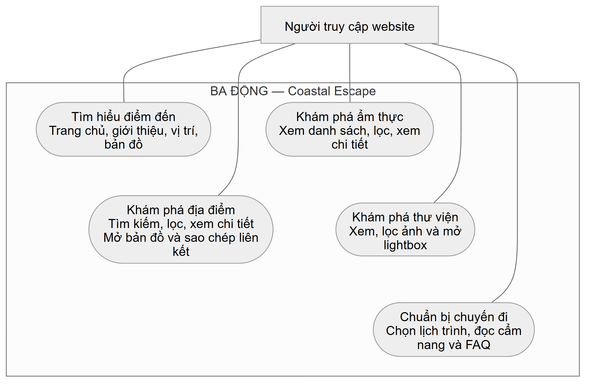
Sơ đồ chức năng gom thao tác theo mục tiêu đọc. Mỗi nhóm có điểm vào khác nhau, nhưng dùng chung ngữ cảnh website và thành phần điều hướng. Người sửa nội dung hoạt động trong kho mã, chỉnh dữ liệu hoặc thẩm định ảnh trước khi phát hành. Người đó không phải là tác nhân quản trị bên trong sản phẩm đang chạy. Sự phân định này giúp loại khỏi kiến trúc các chức năng không tồn tại, như đăng nhập và duyệt đơn đặt dịch vụ.
3.1.2. Lớp dựng, triển khai và lưu lượng môi trường thực thi
Mã nguồn C#, Razor, dữ liệu JSON và ảnh là đầu vào của bước dựng. GitHub Actions chuẩn bị SDK và tạo gói triển khai. Gói cuối cùng chứa tài liệu HTML ban đầu, CSS, ảnh, mã JavaScript, môi trường thực thi và assembly có thể chạy trên trình duyệt. GitHub Pages phục vụ các tài nguyên đó dưới thư mục của dự án. Tải trang là quan hệ giữa trình duyệt và nơi phục vụ tệp. Khi hoạt động, Razor gọi dịch vụ đọc JSON thông qua HTTP để lấy nội dung.
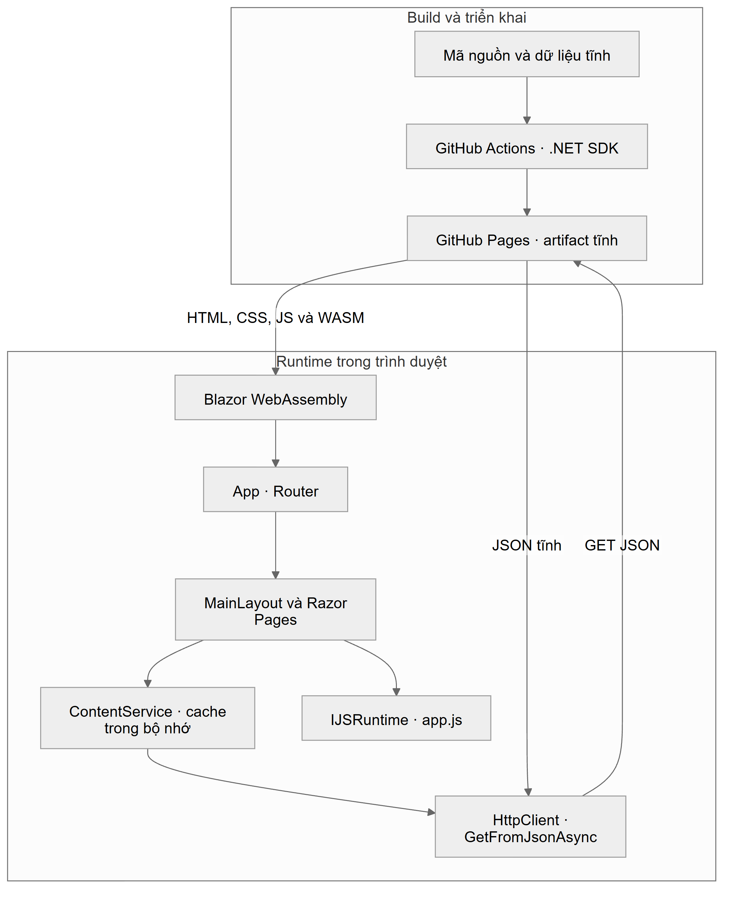
Môi trường thực thi chạy tại thiết bị người dùng. Việc lọc danh sách, cập nhật tab và chuyển hình không gửi yêu cầu xử lý đến một API nghiệp vụ. Khối HttpClient đọc tệp tĩnh và trả dữ liệu để ứng dụng quản lý. Những yêu cầu đến bên ngoài như việc mở bản đồ đi theo liên kết rõ ràng. Cách bố trí này phù hợp với lượng dữ liệu và tốc độ thay đổi trong phạm vi đề tài. Nó cũng đưa lỗi startup, sai base path hoặc thiếu file ảnh thành các lỗi có thể tái hiện từ gói triển khai, thay vì lỗi ở lớp xử lý server.
3.1.3. Tổ chức kho mã
Thư mục src/BaDong.CoastalEscape chứa project Blazor và các phần tử xuất bản từ wwwroot. Các trang trong Pages theo nhóm chức năng. Components chứa thẻ và thành phần dùng chung. Layout chứa cấu trúc bao, còn Services và Models tạo hợp đồng đọc dữ liệu. Tests tham chiếu ứng dụng và sao dữ liệu cùng tài nguyên cần kiểm vào output của dự án test. Tệp global.json cung cấp cấu hình chọn SDK và runner test. Hai workflow trong .github/workflows phục vụ CI và GitHub Pages.
Các hướng dẫn, dữ liệu kiểm thử, kết quả và sơ đồ được gắn với thư mục phù hợp để người chạy lại có thể phân biệt ba mục tiêu. Muốn chạy sản phẩm trên máy phát triển, bắt đầu từ setup. Muốn xem phạm vi release, theo mốc và commit trong docs. Muốn sửa báo cáo học thuật, dùng nguồn trong thesis. Đơn vị kiểm tra nội dung bằng phần mềm là commit, còn đơn vị tham chiếu ảnh là file có hồ sơ xuất xứ. Nhờ đó sửa một ảnh không làm mất dữ kiện về release trước.
3.2. Thành phần giao diện và điều hướng
3.2.1. Thành phần trang và phần tử dùng chung
App cấu hình Router, RouteView và điểm focus khi chuyển trang. MainLayout bao nội dung bằng điều hướng desktop, menu mobile và vùng main. DestinationCard và FoodCard nhận model làm tham số, dùng trong các trang có cùng kiểu dữ liệu. Breadcrumbs trình bày quan hệ danh sách và chi tiết. SourceNote hiển thị liên kết nguồn tại các vùng cần minh bạch. Các component được chia theo dữ liệu hoặc hành vi sử dụng lại, tránh sao chép nguyên cả trang.
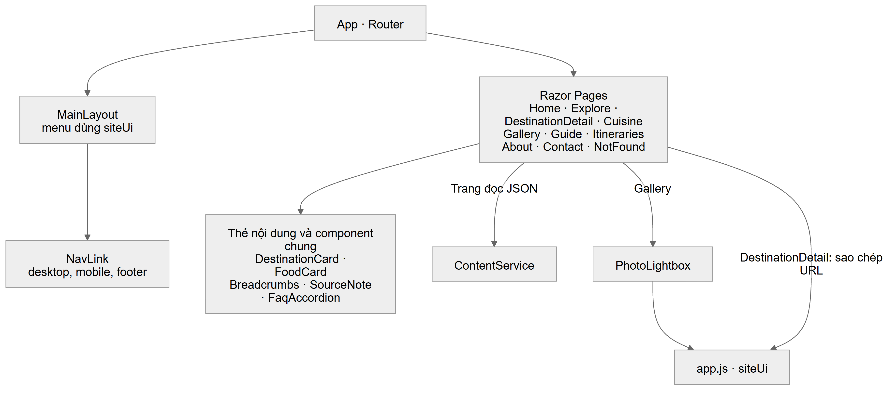
Gallery quản lý danh sách ảnh sau lọc và mở PhotoLightbox với tập ảnh hiện tại. Component này hiển thị ảnh, caption, siêu dữ liệu và các nút chuyển ảnh. FaqAccordion nhận danh sách câu hỏi để dùng ở trang chủ và cẩm nang. Sự phân tách giúp kiểm thử tương tác trên một ngữ cảnh cụ thể và vẫn xác định điểm sở hữu trạng thái. Chẳng hạn danh mục thư viện thuộc trang, trong khi ảnh đang chọn và hành vi đóng thuộc hộp thoại.
3.2.2. Điều hướng, slug và trang không tìm thấy
Một slug được xem là định danh đường dẫn đọc được, chẳng hạn bien-ba-dong. Thẻ và điểm dừng lịch trình dùng slug để tạo URL chi tiết. Trong trang chi tiết, ứng dụng so sánh slug với model. Nếu có bản ghi, nó kết xuất nội dung tương ứng. Nếu tập có dữ liệu nhưng slug vắng mặt, trang cung cấp thông báo và liên kết trở về danh sách. Router dùng NotFound khi mẫu URL không khớp.
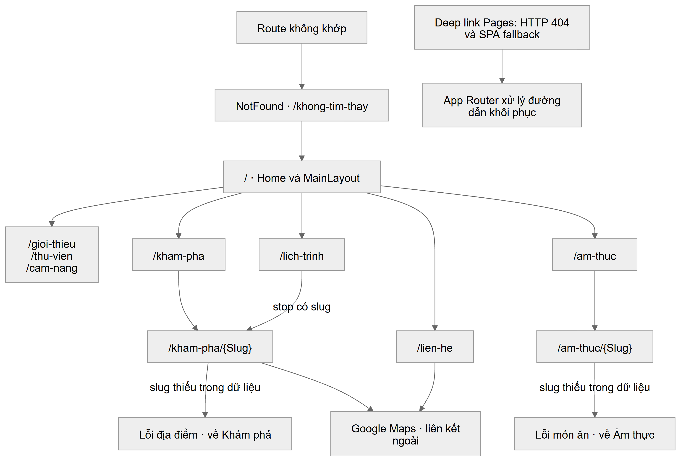
Các liên kết liên quan được định tuyến tương đối tới base ứng dụng. Tên path trong sơ đồ là path bên trong ứng dụng, chưa gồm thư mục project site. Liên kết bản đồ thuộc dịch vụ bên ngoài và được xử lý bằng URL tuyệt đối. Điều này cũng giải thích vì sao kiểm thử MapUrl chỉ xác nhận định dạng hoặc đích liên kết, còn dịch vụ bên ngoài không nằm trong phạm vi bảo đảm của website.
3.2.3. Khởi tạo title theo trạng thái
Điểm lắp HeadOutlet được khai báo một lần. Title của hai trang chi tiết đi qua PageTitle. Trong DestinationDetail, điều kiện đang tải được xét trước. Khi đã tải, tên địa điểm hợp lệ được ưu tiên. Nếu không có đối tượng, title phân biệt danh sách rỗng với slug không khớp trên danh sách có dữ liệu. Trang món ăn giữ title tên món và title danh sách, đồng thời thêm chuỗi cụ thể cho trường hợp không tìm thấy món.
<PageTitle>@(TitleLabel) · BA ĐỘNG — Coastal Escape</PageTitle>
Dòng trích trên đặt trước các nhánh giao diện trong DestinationDetail.razor. Cấu trúc này đủ để mỗi nhánh có title và không cần JavaScript ghi document.title. Thẻ mô tả vẫn ở nhánh có nội dung. Tài liệu index.html ban đầu là màn hình khởi động, chưa có title riêng. Phần kiểm chứng dùng mốc đã kết xuất của Razor để đánh giá thay đổi.
3.3. Mô hình và quy tắc dữ liệu
3.3.1. Các lớp nội dung
Destination và Food cùng có ID, slug, nhóm nội dung và trường ảnh. Chúng khác về nhiệm vụ trình bày. Địa điểm cần vị trí, mô tả, chủ đề và đường dẫn bản đồ. Món ăn cần mô tả món, gợi ý sử dụng và thông tin liên quan đến ảnh. GalleryPhoto tập trung vào nguồn và kích thước tệp, đáp ứng cả ảnh thu nhỏ và ảnh mở trong hộp thoại. FaqItem gồm câu hỏi, câu trả lời và nguồn.
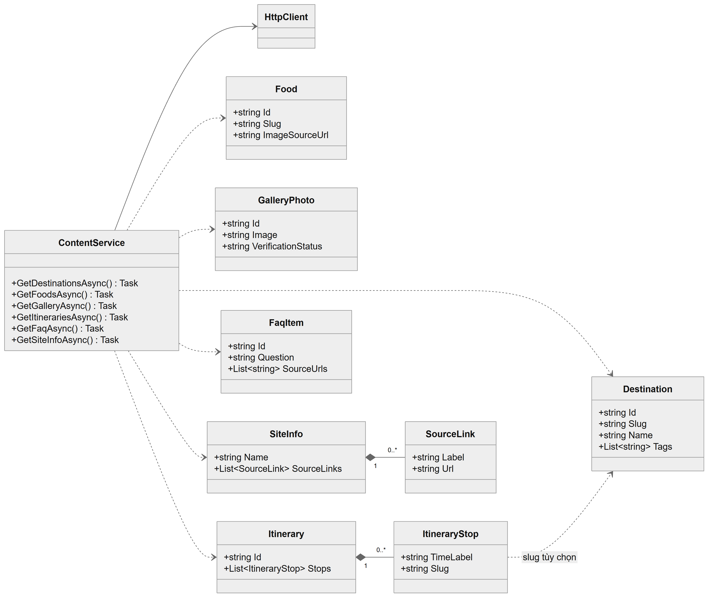
Itinerary chứa danh sách ItineraryStop. Điểm dừng có thể mang slug địa điểm; khi slug rỗng, giao diện có thể hiển thị gợi ý như nghỉ trưa mà không tạo link. SiteInfo chứa một số thông tin chung và tập liên kết nguồn. Mối quan hệ về tham chiếu chỉ có hiệu lực khi kiểm thử hoặc mã môi trường thực thi tìm thấy dữ liệu tương ứng. Model không thêm một chính sách lưu trữ hoặc truy vấn riêng.
3.3.2. Tập JSON và dữ liệu kiểm tra
Sáu tệp được dịch vụ nội dung đọc khi phục vụ website. Hai tệp còn lại theo dõi tài nguyên ảnh và yêu cầu ảnh thiếu. Khi xem một đối tượng model, dữ liệu bắt buộc cho hiển thị được kiểm khác với trường tùy chọn. Slug địa điểm và món phải duy nhất trong từng tập, nhưng không cần duy nhất xuyên hai nhóm vì tiền tố route khác nhau. Ảnh và biến thể phải có đường dẫn đúng chữ hoa/thường trong gói triển khai. Kiểm tra này hữu ích khi quy trình phát hành chạy trên Ubuntu và dùng hệ thống tệp với quy tắc tên khác máy phát triển.
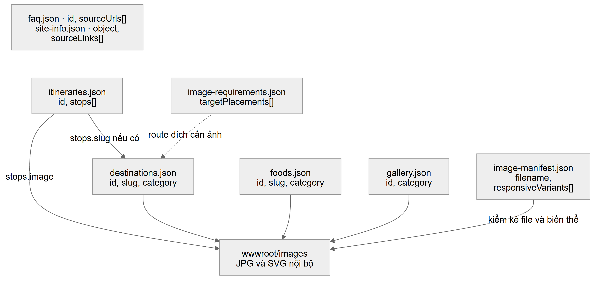
| Nhóm | Số mục | Vai trò và phép kiểm |
|---|---|---|
| Địa điểm | 7 | ID, slug, category, nguồn và đường dẫn ảnh. Năm mục đang chờ ảnh xác minh. |
| Món ăn | 4 | Slug, phân nhóm, biến thể và nhãn vị trí chụp. |
| Thư viện | 7 | Caption, mô tả thay thế, tác giả, giấy phép và ảnh. |
| Lịch trình | 2 | Danh sách điểm dừng. Slug có giá trị phải trỏ tới địa điểm hợp lệ. |
| FAQ và thông tin chung | 5 và 1 | Câu hỏi, câu trả lời, thuộc tính website và nguồn. |
| Hồ sơ ảnh và yêu cầu ảnh | 8 và 5 | Danh sách tài nguyên, biến thể, trạng thái xác minh và vị trí cần ảnh. |
3.3.3. Hồ sơ ảnh và ảnh đáp ứng
Mỗi ảnh đã xác minh có một đường dẫn cục bộ và thông tin lấy từ hồ sơ nguồn. Tập trường xác minh gồm chủ thể, vị trí chụp, tác giả, giấy phép và URL. Địa điểm Biển Ba Động sử dụng ảnh có hồ sơ Wikimedia Commons của Baoothersks và giấy phép CC BY 4.0 [1]. Dữ liệu lưu tên nguồn cùng vị trí như được đối chiếu. Khi ảnh chỉ được xác minh về chủ thể, mô tả vị trí không tự động coi ảnh là ảnh của Ba Động. Năm địa điểm đang chờ ảnh vẫn dùng dạng hình giữ chỗ nội bộ.
Các biến thể có kích thước khác nhau giúp trình duyệt chọn tệp phù hợp. Khi có hai bản ảnh địa điểm, trang mô tả chúng bằng srcset; ảnh PENDING dùng tài nguyên ảnh giữ chỗ tương ứng. Mục thư viện giữ thumbnail để xem lướt và dùng tệp ảnh chi tiết khi mở. Việc có siêu dữ liệu đầy đủ và file tồn tại mới xác nhận cấu trúc và quy trình xuất bản. Chất lượng ảnh tại địa điểm và độ mới của tư liệu là vấn đề biên tập cần nguồn xác minh tiếp theo.
3.4. Dịch vụ và xử lý nội dung
3.4.1. Tải qua HTTP và lưu kết quả
ContentService nhận HttpClient từ host. Mỗi phương thức công khai chỉ định một đường dẫn cố định. Khi yêu cầu tiếp tục từ trang khác, phương thức có thể trả dữ liệu bộ nhớ đệm bằng đường dẫn và kiểu phù hợp. Nếu chưa có, dịch vụ gọi GetFromJsonAsync với cấu hình web của System.Text.Json. Kết quả thành công được đưa vào bộ nhớ đệm. Trường hợp JSON chứa null dùng giá trị rỗng hoặc mặc định và bộ nhớ đệm giá trị đó.
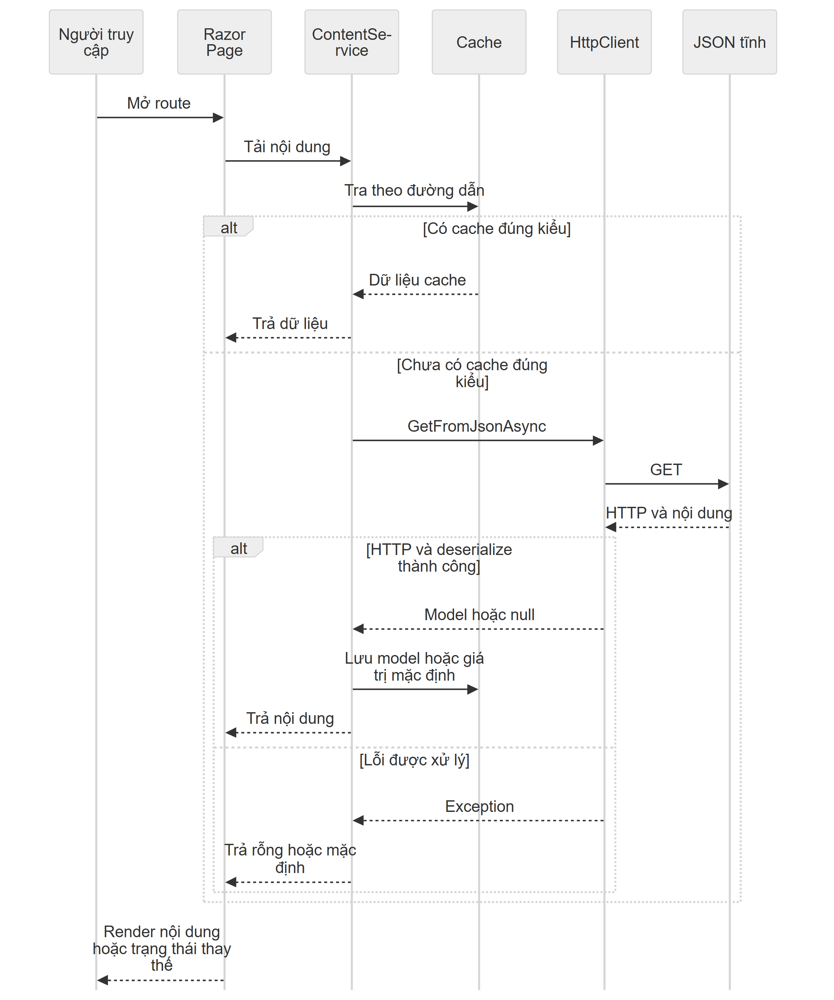
Bộ nhớ đệm dùng ConcurrentDictionary<string, object> để đọc và ghi an toàn trên cấu trúc từ điển. Hai yêu cầu cùng lúc vẫn có thể tải cùng một tệp khi cả hai chưa tìm thấy dữ liệu. Kết quả được dùng lại giữa các trang trong vòng đời của dịch vụ. Khi chỉnh sửa JSON, cần phát hành lại tệp để người đọc nhận dữ liệu mới.
3.4.2. Trạng thái lỗi có thể xử lý
Dịch vụ xử lý bốn nhóm ngoại lệ gồm lỗi HTTP, lỗi đọc JSON, kiểu không được hỗ trợ và tác vụ bị hủy. Khi có ngoại lệ, dịch vụ trả danh sách rỗng hoặc một SiteInfo mặc định và không ghi vào bộ nhớ đệm. Các trang dùng kết quả đó để quyết định có đủ dữ liệu cho nhánh chi tiết hay không. Title báo chưa có dữ liệu được sử dụng ở trạng thái rỗng, gồm lỗi tải và tập rỗng hợp lệ. Hướng xử lý này tránh thông báo sự cố kết nối khi nguyên nhân chưa phân biệt được.
Một quy tắc khác là không đẩy lỗi từ môi trường thử vào kết luận bản công khai. Ca 503 được định nghĩa bằng chặn request JSON trên máy phát triển có chủ đích. Người kiểm biết thời điểm request bị giữ, biết thời điểm HTTP 503 trả về và có thể đọc DOM ở hai trạng thái. Số liệu bản công khai ghi riêng theo môi trường. Cùng một mã 404 có thể xuất hiện ở log của bản công khai nhưng đó là 404 tài liệu ban đầu khi mở route sâu, khác với JSON 503 được dùng để kiểm nội dung rỗng.
3.4.3. Tìm kiếm có dấu và bộ lọc
Trang Khám phá nhận giá trị khi người dùng nhập. Đối với mỗi đối tượng, thuật toán kiểm tra danh mục trước. Danh mục mặc định cho đi qua tất cả điểm. Nếu cần so khớp từ khóa, chuỗi tìm kiếm và các trường tên, mô tả ngắn, đoạn đầu mô tả và tags được chuẩn hóa. Kết quả so chuỗi con được áp dụng theo thứ tự dữ liệu ban đầu. Khi không có phần tử phù hợp, ứng dụng hiện thông báo và nút xóa bộ lọc.
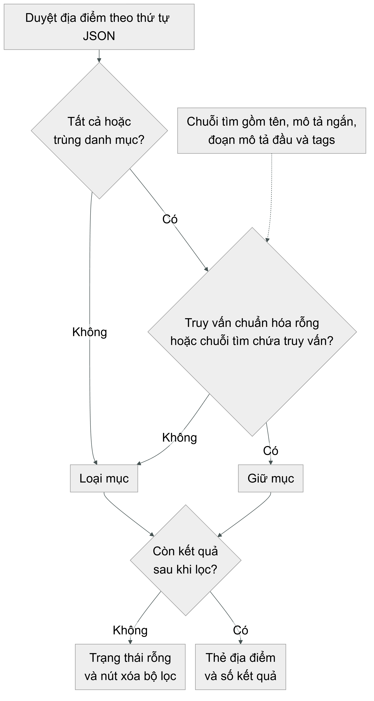
Tách lọc nhóm và lọc từ khóa giúp người dùng giải thích được kết quả. Chọn lại Tất cả bỏ điều kiện danh mục. Nút xóa bộ lọc còn đặt từ khóa về rỗng. Dữ liệu hiện có ít phần tử nên mỗi thao tác lọc có thể đi qua danh sách đang ở bộ nhớ. Đồ án không dùng chỉ mục toàn văn, thứ hạng, sửa chính tả hay phân đoạn từ tiếng Việt. Việc bỏ dấu kết hợp giúp các ca như hoàng hôn và hoang hon. Cặp đ và d là trường hợp riêng vì ký tự đ không bị loại bởi thao tác xóa dấu kết hợp.
3.5. Hộp thoại, menu và triển khai
3.5.1. Focus và tương tác
Menu di động và lightbox có cơ chế lưu vị trí focus ban đầu, điều phối focus khi mở, giới hạn vòng tab khi hộp thoại hoạt động và trả focus khi đóng. Khóa cuộn được áp dụng cho body trong thời gian hộp thoại mở. Khi kích hoạt Escape, ứng dụng điều phối việc đóng từ trạng thái UI. Lightbox còn phản hồi phím mũi tên để đổi ảnh. Mã Razor quyết định ảnh đang xem và việc mở/đóng; mã JavaScript áp dụng thao tác cần trạng thái DOM.
Tương tác ở các nhóm nội dung khác dùng phần tử ngữ nghĩa và thuộc tính ARIA tương ứng. FAQ mở rộng nội dung khi người dùng kích hoạt nút. Mỗi tab lịch trình có aria-controls trỏ tới một panel tồn tại; panel không chọn mang thuộc tính hidden, còn panel hoạt động có aria-labelledby trỏ lại tab. Roving tabindex giữ một tab trong thứ tự Tab. ArrowLeft, ArrowRight, Home và End đổi lựa chọn mà không làm cuộn trang; Tab và Shift+Tab vẫn hoạt động bình thường. Trang còn cung cấp chỉ dẫn focus cho điều hướng và CSS điều chỉnh animation khi người dùng yêu cầu giảm chuyển động.
3.5.2. Build, publish và đường dẫn triển khai
Workflow CI chạy restore app và project test, dựng bản Release, test và publish để kiểm tra cấu hình relinking của WebAssembly. Workflow Pages dùng SDK .NET 10 và workload wasm-tools, dựng output, áp dụng base path và các token triển khai. Job deploy nhận gói triển khai từ job build của cùng workflow. Hai workflow có thể chạy song song khi push main, nên kết luận của từng lần chạy được lưu riêng khi phát hành.
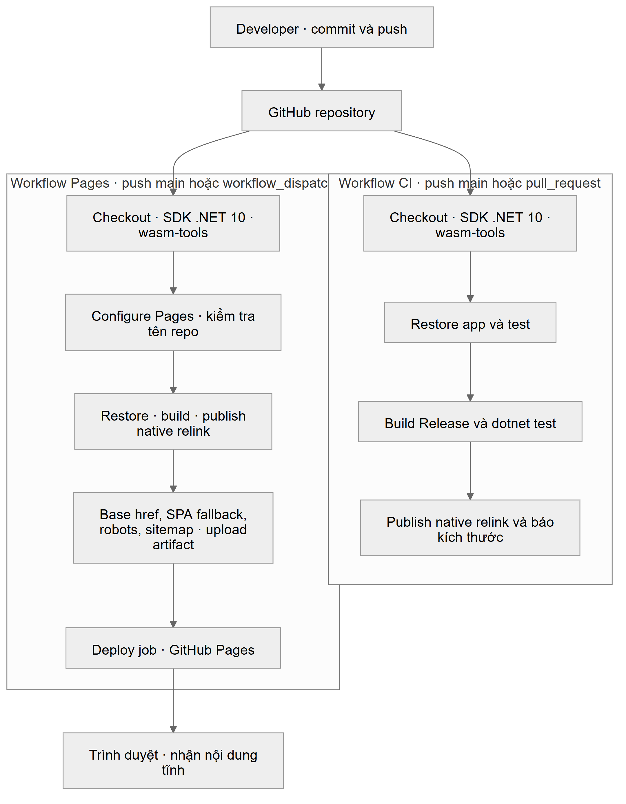
Trong bản publish, thẻ base trỏ vào thư mục của repo. robots.txt và sitemap dùng URL public đã thay token. 404.html đặt mục tiêu điều hướng trong session storage và chuyển về base. Khi ứng dụng khởi động, đoạn JavaScript xử lý mục tiêu và cập nhật lịch sử để Router nhận path mong muốn. Cơ chế này duy trì trải nghiệm khi trình duyệt thực thi được các bước trên. Nó không biến lần phản hồi đầu thành HTTP 200. Điều kiện thành công thực tế gồm hai kết quả đồng thời: trạng thái ban đầu được ghi đúng và nội dung sau khi khởi động ứng với route ban đầu.
CHƯƠNG 4. KẾT QUẢ NGHIÊN CỨU
4.1. Môi trường và nguyên tắc đánh giá
4.1.1. Phạm vi theo mốc phiên bản
Phiên bản cơ sở trước khi sửa tiêu đề là 955956b. Mốc 463da37 ngày 25/11/2026 giữ kết quả của đợt title và hồ sơ học thuật ban đầu. Đợt tinh chỉnh UI sau đó đi qua PR #2, gồm commit giao diện 8060028, commit hoàn thiện quan hệ tab/panel 399393e và merge commit sản phẩm cuối 1c04cb1. Các kết quả CI và production cuối trong chương này chỉ dùng run gắn với merge commit đó.
Bộ 18 ảnh ngày 25/11/2026 tiếp tục là bằng chứng lịch sử của bản Release trên máy phát triển. Sau deployment cuối, em tạo thêm 13 ảnh production gắn hậu tố 1c04cb1. Hai bộ không thay thế lẫn nhau. Các kết luận production dựa trên phản hồi HTTP, trạng thái DOM, yêu cầu tài nguyên và ảnh chụp mới; ảnh lịch sử chỉ được giữ ở những phần mô tả đúng đợt kiểm tra trước đó.
4.1.2. Kiểm tra dữ liệu và dịch vụ
Hai project restore thành công với SDK 10.0.100 trong kiểm tra trước phát hành. Bản app Release có 0 cảnh báo và 0 lỗi. Kết quả 14 test được xác minh trong máy phát triển và CI 45738100708 đúng SHA 1c04cb1. CI còn cài workload wasm-tools, relink môi trường thực thi, biên dịch native assets và chạy wasm-opt. Kiểm tra JSON đọc tám tệp hợp lệ. Các test bao gồm model, file ảnh, siêu dữ liệu trạng thái, tham chiếu điểm dừng và hành vi tải HTTP.
| Phép kiểm | Kết quả trên máy phát triển | Kết quả CI đúng SHA |
|---|---|---|
| Restore | App và project test đạt | Bước restore đạt |
| Release build | 0 cảnh báo, 0 lỗi | 0 cảnh báo, 0 lỗi |
| Kiểm thử tự động | 14 đạt, 0 lỗi, 0 bỏ qua | 14 đạt, 0 lỗi, 0 bỏ qua |
| JSON và nguồn ảnh | 8 tệp đọc được; kiểm tra siêu dữ liệu bằng suite | Suite dữ liệu đạt |
Tài liệu kiểm thử giúp nhận diện ranh giới mà test bao phủ. Ví dụ test duy nhất của slug hữu ích vì Router tra phần tử bằng chuỗi; dữ liệu trùng có thể khiến lựa chọn bản ghi phụ thuộc thứ tự. Test đối chiếu ảnh trên máy phát triển hữu ích vì một tên không khớp chữ hoa/thường có thể chỉ phát hiện khi ra môi trường khác. Ca HTTP có chủ định với trình xử lý giả xác nhận dịch vụ trả giá trị rỗng. Mỗi ca kiểm có một đối tượng quan sát, thay cho kết luận chung rằng tất cả lỗi nội dung đã được loại bỏ.
4.2. Kết quả giao diện và chức năng
4.2.1. Trang chủ ở các kích thước
Ở desktop, vùng chính của trang chủ đặt ảnh và thông điệp nhận diện cùng các lối đi nổi bật. Người đọc có thể chuyển mục bằng điều hướng phía trên. Trong các ảnh tablet và mobile, kích thước cột và cách đưa menu thay đổi để sử dụng được chiều rộng hẹp. Hai chế độ vẫn giữ mục tiêu nhận diện trang và đi tiếp sang nội dung chính. Ảnh chủ đạo dùng tài nguyên đã xác minh của Biển Ba Động [1]. Hình minh họa bố cục trên thiết bị giả lập, không đại diện cho số liệu khả dụng của tập người dùng.
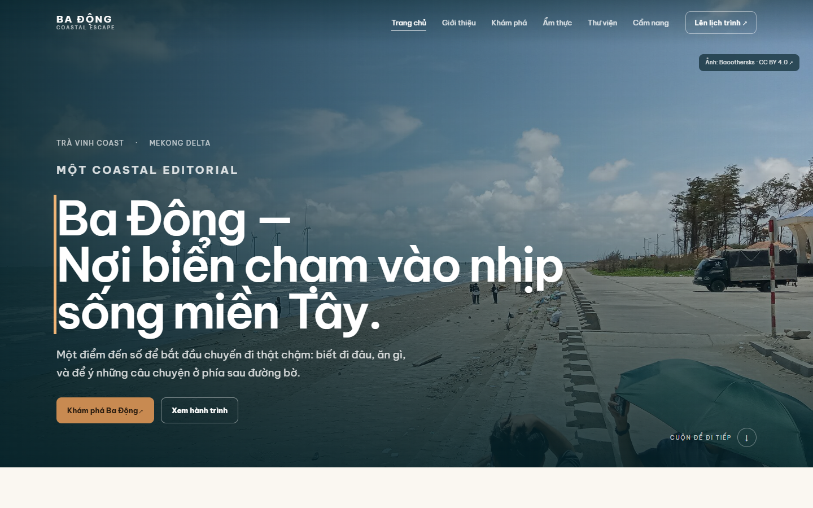
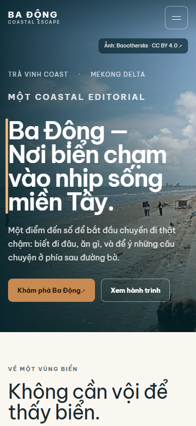
Menu mobile được kiểm bằng thao tác phím. Trong đợt trên máy phát triển, Enter mở menu, nhìn thấy focus vào nút đóng, và Tab cùng Shift+Tab chuyển vòng trong dialog. Escape đóng menu và trở về nút ban đầu. Body khóa cuộn khi hộp thoại mở. Khi giả lập giảm chuyển động, thời lượng animation hero quan sát còn 0,01 ms. Ảnh menu ở Phụ lục E giúp đối chiếu bố cục, còn kết quả focus dựa trên kiểm tra DOM và thao tác, vì một ảnh tĩnh không chứng minh thứ tự tác vụ.
4.2.2. Danh sách địa điểm và tìm kiếm
Người đọc mở Khám phá để thấy các thẻ địa điểm và các điều khiển. Khi nhập hoàng hôn và hoang hon, kiểm tra ghi nhận cùng một thẻ goc-ngam-hoang-hon. Khi lọc Thiên nhiên, tập kết quả thu hẹp và vẫn còn mục. Khi dùng một chuỗi không khớp, vùng kết quả rỗng đưa ra cách xóa bộ lọc. Sau khi xóa, bảy thẻ xuất hiện. Phép kiểm giữ ba giai đoạn tách nhau: xác nhận lọc đúng, nhận thấy trạng thái rỗng, rồi xác nhận có thể khôi phục danh sách.
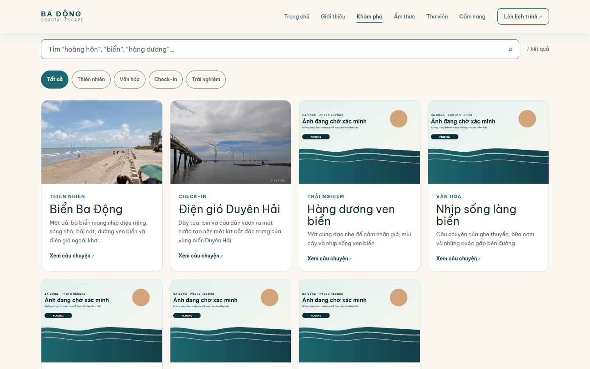
Kiểm tra hỗ trợ bỏ dấu vẫn có giới hạn. Kết quả cho hai truy vấn đã nêu khớp, còn thuật toán không ánh xạ riêng đ/d. Một test dùng từ có đ và một test dùng dấu kết hợp sẽ đánh giá hai khía cạnh khác nhau. Mục truy vết của tìm kiếm vì vậy ở trạng thái một phần. Ảnh danh sách, kết quả tìm kiếm, danh mục đã chọn và chi tiết địa điểm nằm ở Phụ lục E.
Chi tiết địa điểm giữ lối mở bản đồ và nguồn ảnh. Khi đi từ thẻ trong danh sách, slug được giữ trong URL và title. Trong kiểm tra bản công khai, đường dẫn từ trang lỗi về danh sách cho phép mở lại Biển Ba Động và tải lại trang chi tiết. Giao diện có chức năng sao chép liên kết, nhưng việc đọc lại giá trị thật từ clipboard chưa có ca xác minh trong đợt này.
4.2.3. Ẩm thực và thư viện
Mục Ẩm thực có bốn món ở trạng thái ban đầu. Ở trên máy phát triển, bộ lọc Hải sản giảm từ bốn xuống một món, và nút Tất cả khôi phục bốn mục. Chi tiết Cua biển có tên món trong title và nhãn xuất xứ trong phần ảnh. Nội dung không dùng ảnh tham chiếu làm bằng chứng về món được bán tại Ba Động. Hai trạng thái danh sách và chi tiết được chụp riêng để có thể xem lại ngữ cảnh.
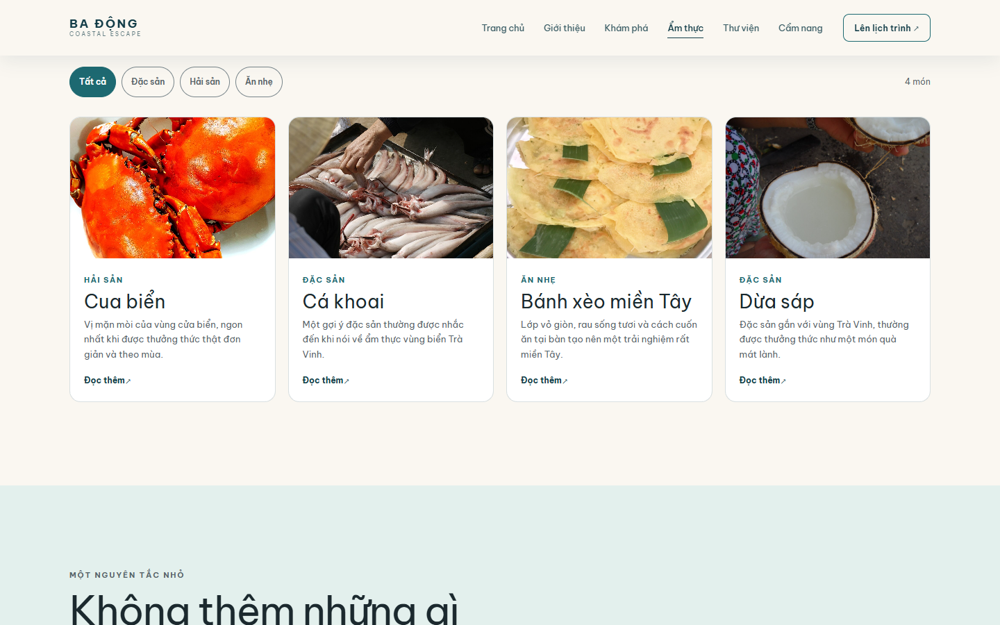
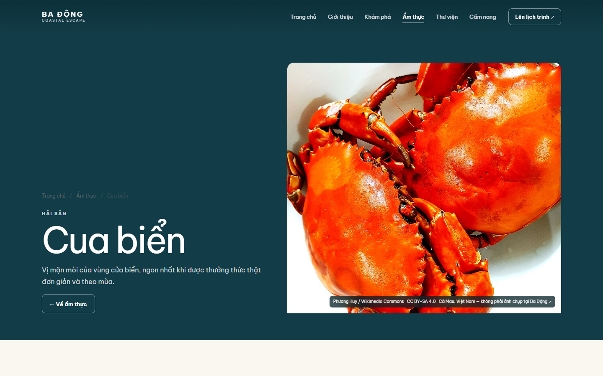
Thư viện cho phép mở ảnh lớn và đọc chú thích. Ở ca kiểm tra bàn phím trên máy phát triển, Enter từ thẻ mở hộp thoại. Mũi tên phải đổi ảnh và mũi tên trái khôi phục ảnh ban đầu. Escape đóng và trả focus về thẻ. Điều này xác nhận thao tác đã kiểm và lối trở về tương tác sau khi xem ảnh. Nguồn và giấy phép vẫn xuất hiện trong vùng caption của hộp thoại.
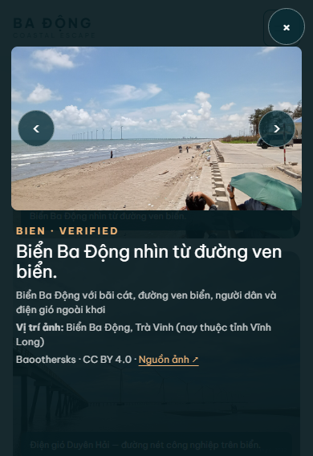
4.2.4. Cẩm nang, lịch trình và vị trí
Cẩm nang để người đọc mở câu hỏi thường gặp và xem câu trả lời trong trang. Lượt trên máy phát triển kích hoạt FAQ bằng Enter và đọc đáp án hiển thị. Với lịch trình, lựa chọn tab thứ hai đưa bố cục sang gợi ý hai ngày và thuộc tính aria-selected trở thành true. Tham chiếu slug từ điểm dừng được luồng test dữ liệu kiểm tra. Kết hợp hai lớp kiểm tra giúp xác nhận cả thao tác chọn và tiền đề của đường dẫn.
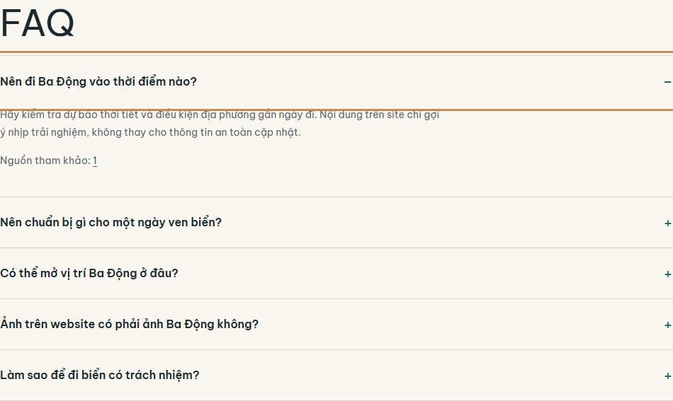
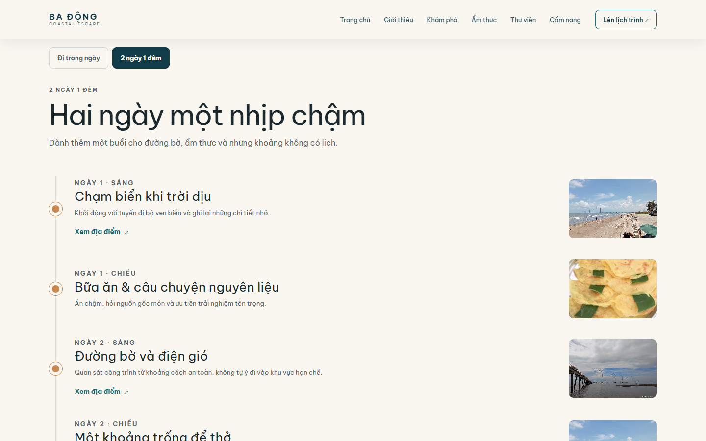
Mục Vị trí đặt thông tin hành chính và liên kết Google Maps cùng phần dẫn nguồn. URL bản đồ đi ra dịch vụ ngoài và được đối chiếu ở mốc kiểm tra đường dẫn. Lịch trình không ước lượng giờ di chuyển theo lưu lượng thực tế. Người dùng có thể dùng lối mở bản đồ như điểm bắt đầu và tự kiểm tra lại đường đi khi lên kế hoạch. Ảnh trang Vị trí ở Phụ lục E.
4.3. Hồi quy title, điều hướng và khả năng tiếp cận
4.3.1. Phát hiện và sửa lỗi
Mở slug địa điểm sai ở phiên bản trước cho thấy heading lỗi đúng nhưng không có head title. Tái hiện trên máy phát triển cho kết quả tương tự. Kiểm tra mã cho thấy title nằm trong nhánh chỉ chạy khi có địa điểm. Sau khi sửa, title đứng ở cấp component. Ca chi tiết hợp lệ dùng tên thật, ca slug sai có thông báo cụ thể, và trong lúc tải trang cho biết đang tải nội dung.
Kiểm tra trên máy phát triển gồm bảy đường dẫn ở bốn chiều rộng 320, 390, 768 và 1440 pixel CSS, tổng cộng 28 lượt. Các URL gồm chi tiết địa điểm hợp lệ, chi tiết địa điểm sai, danh sách món, chi tiết món hợp lệ, chi tiết món sai, trang lỗi có route rõ và URL không khớp mẫu. Mỗi lượt kiểm title, một thẻ title, một heading chính và một vùng main. Đợt trên máy phát triển còn có hai lần giữ request JSON rồi trả 503 để kiểm quá trình từ đang tải sang chưa có dữ liệu. Heading lỗi được quan sát sau phản hồi mô phỏng.
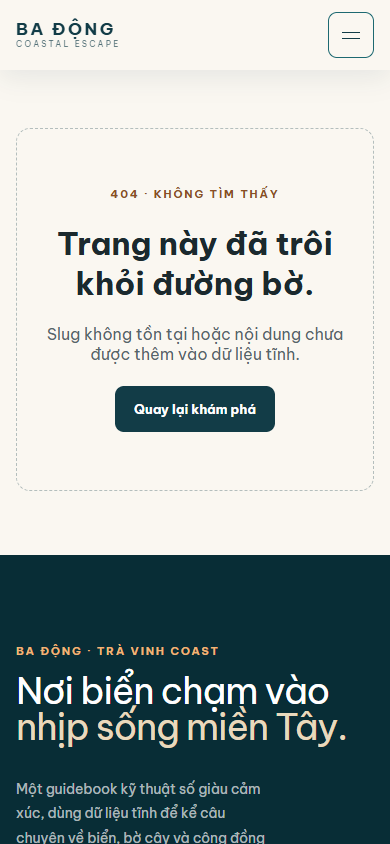
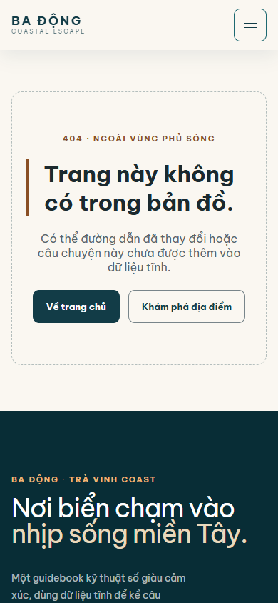
Ảnh thân trang giúp thấy lối đi khi gặp lỗi. Giá trị title đến từ kiểm tra DOM chứ không đọc từ ảnh. Sau khi sửa, ca chuyển từ trang lỗi về danh sách và mở lại trang hợp lệ giúp phát hiện title cũ còn sót lại khi đổi route. Phép kiểm tải lại là một trường hợp khác vì trình duyệt phải nhận phản hồi mới từ nơi phục vụ site. Các ca thực tế cùng title quan sát được ghi theo môi trường trong Phụ lục C.
4.3.2. Khả năng tiếp cận và đáp ứng
Các lượt production cuối ghi nhận heading, main, ngôn ngữ vi và không tràn ngang ở 52 ca route/viewport. Phạm vi bàn phím gồm mở và đóng menu mobile, cuộn nội bộ ở landscape, đổi ảnh và đóng lightbox, mở FAQ và điều khiển tab lịch trình. Mỗi aria-controls của tab trỏ tới một panel tồn tại. Panel không chọn có hidden; panel hoạt động có aria-labelledby; aria-selected và roving tabindex đổi đồng bộ. ArrowLeft, ArrowRight, Home và End không làm đổi vị trí cuộn trang. Tab đi vào panel hoạt động, còn Shift+Tab quay lại tab đang chọn.
| Phần đã kiểm | Phạm vi và kết quả |
|---|---|
| Tiêu đề, heading và landmark | Đạt ở 52 lượt production cuối. |
| Vùng hiển thị | 320 × 568, 390 × 844, 768 × 1024 và 1440 × 900. Không quan sát tràn ngang. |
| Bàn phím và focus | Menu, ảnh, FAQ, lịch trình, dialog và quay lại từ lỗi đạt trong các nhóm tương tác đã chạy. |
| Giảm chuyển động | Quan sát media query và thời lượng animation hero khi giả lập. |
| Firefox, WebKit, axe-core, tương phản, trình đọc màn hình, zoom 200% thực tế | Chưa chạy; không được suy diễn từ kiểm tra Chromium. |
Mức đánh giá là một phần so với mục tiêu khả năng tiếp cận. Máy kiểm dùng trình duyệt desktop giả lập bề rộng, do đó không đại diện cho toàn bộ phần cứng và công nghệ hỗ trợ. Chương 5 đề xuất bổ sung tổ hợp test có thể tái lập, trong đó ghi công cụ, môi trường và tình huống đo cụ thể. Không quy đổi trực tiếp số ca đạt thành mức tuân thủ WCAG.
4.4. Phát hành và giới hạn quan sát
4.4.1. Kết quả CI và Pages đúng phiên bản
Mốc phát hành đầy đủ là 1c04cb15c700c5a78c4c89d3be63008af990fd5f. CI 45738100708 và Pages 45738100919 đều thành công cho SHA này. Deployment 8074236451 hoàn tất ngày 26/11/2026. Việc xác nhận SHA của workflow độc lập với kiểm tra đường dẫn công khai. Runner xác nhận quy trình dựng và native publish; trình duyệt xác nhận artifact đã triển khai kết xuất đúng các ca đã chọn.
| Môi trường | Đối tượng kiểm | Kết quả |
|---|---|---|
| Phiên bản cơ sở | 48 lượt trình duyệt, 12 URL × 4 chiều rộng | Đợt hồi quy trước thay đổi tiêu đề. Khi tái hiện lỗi, slug địa điểm sai có heading nhưng tiêu đề thẻ trình duyệt rỗng. |
| Bản sửa trên máy phát triển | 28 lượt, 7 URL × 4 chiều rộng. Hai ca HTTP 503 mô phỏng được kiểm riêng. | Tiêu đề và các phần tử DOM đạt trong 28 lượt. Hai ca 503 hiển thị trạng thái chưa có dữ liệu. |
| Candidate UI trước sửa tab cuối | 126 tổ hợp local và 126 tổ hợp production | Bằng chứng lịch sử của candidate; không dùng để chứng minh merge SHA cuối. |
| Bản công khai cuối | 52 lượt, 13 route × 4 viewport, cùng các nhóm tương tác | 52 lượt chức năng đạt. Bốn trang chủ HTTP 200; 48 direct deep link HTTP 404 rồi khôi phục đúng route. |
Lượt kiểm tra nhanh trên bản công khai dùng Chrome Headless 158. Tại mỗi URL, phép kiểm đợi title và heading đúng sau môi trường thực thi, xác nhận thẻ title duy nhất và theo dõi yêu cầu tài nguyên. CSS, JavaScript, WebAssembly, JSON và ảnh có phản hồi thành công ở lượt hoàn tất. Không ghi nhận lỗi JavaScript, lỗi yêu cầu asset/JSON hoặc lỗi console ngoài 404 của tài liệu được dự kiến. Chromium có hủy một số yêu cầu khi điều hướng. Các lượt ghi nhận được trình bày riêng trong hồ sơ phát hành. Phạm vi đánh giá giới hạn ở các đường dẫn và tài nguyên quan sát trong từng lượt.
Một URL ở lớp ứng dụng có thể hoạt động với người đọc dù lần đáp ứng trực tiếp từ nơi lưu trữ tĩnh là 404. Kết quả này là bằng chứng cho giới hạn fallback và SEO. Nó cũng giúp phân biệt route lỗi theo nghĩa nội dung với mã phản hồi máy chủ. Trang chi tiết địa điểm hợp lệ và route slug không tồn tại đều có thể bắt đầu bằng HTTP 404 trong môi trường Pages, rồi cho hai kết quả UI khác nhau khi ứng dụng đã đọc dữ liệu.
4.4.2. Số liệu gói triển khai và giới hạn hiệu năng
CI của mốc phát hành báo 43 framework resources. Tổng dung lượng Brotli của thư mục framework là 2.826.661 byte. Tệp native runtime WASM chưa nén có kích thước 2.900.443 byte và bản Brotli của tệp này là 931.222 byte. Các đại lượng mô tả artifact theo phương pháp của workflow, không phải số byte thực tải của một phiên truy cập và không dùng để cộng thành tổng.
Đợt phát hành chưa đo Lighthouse, Web Vitals hoặc thời gian khởi động chuẩn hóa. Không có kết quả để so sánh tốc độ theo device hoặc mức mạng. Các kiểm tra tải asset và JSON nhằm xác nhận đường dẫn đang phục vụ được. Phép đo hiệu năng, nếu bổ sung, cần chọn trình duyệt, vùng hiển thị, mức mô phỏng mạng, trạng thái bộ nhớ đệm và số lần lặp, sau đó lưu kết quả cùng SHA.
4.5. Đánh giá kết quả
Khi đánh giá mỗi URL, em ghi cả mã HTTP ban đầu, tiêu đề và trang cuối cùng. Nhờ vậy có thể kiểm tra bản sửa tiêu đề mà vẫn nhìn thấy giới hạn triển khai tĩnh. Ảnh giao diện minh họa trạng thái đã quan sát trong lần chạy tương ứng.
Giới hạn chính là HTTP ban đầu của URL sâu, năm địa điểm dùng ảnh giữ chỗ và phạm vi kiểm tra khả năng tiếp cận còn hẹp. Đợt tinh chỉnh cuối đã xử lý chỉ dẫn cuộn, khoảng cách trên màn hình thấp, menu landscape, caption cảm ứng và quan hệ tab/panel. Firefox, WebKit, axe-core, zoom 200% thực tế, trình đọc màn hình và kiểm toán tương phản vẫn chưa có kết quả.
CHƯƠNG 5. KẾT LUẬN VÀ HƯỚNG PHÁT TRIỂN
5.1. Kết luận và đóng góp
5.1.1. Sản phẩm và hồ sơ
Đồ án hoàn thành cẩm nang BA ĐỘNG — Coastal Escape với các luồng tra cứu địa điểm, ẩm thực, ảnh và lịch trình tham khảo. Việc giữ nội dung trong JSON và triển khai bằng Blazor WebAssembly cho phép dựng lại sản phẩm từ một phiên bản của kho mã nguồn. Chương 4 trình bày kết quả kiểm thử của phiên bản đó.
Kết quả của đề tài gồm một cách tổ chức cẩm nang tĩnh có thể tái kiểm tra. Tên, slug, ảnh và nguồn được mô hình hóa để tìm lại từ dữ liệu. Ma trận truy vết nối yêu cầu với nơi hiện thực và bằng chứng, gồm các dòng chưa có kiểm tra. Nhờ ma trận, người đánh giá có thể tra lại điều kiện kiểm tra cho từng chức năng và nhận ra những tiêu chí còn mở.
5.1.2. Hạn chế của bản phát hành
Một số ảnh vẫn cần hồ sơ phù hợp với địa điểm. Website hiển thị ảnh giữ chỗ và trạng thái trong thời gian chưa có tư liệu. Router có thể khôi phục đường dẫn sâu sau khi máy chủ trả 404. Bản động của title cập nhật khi Razor hoạt động, còn HTML ban đầu chưa có title riêng. Các yếu tố này làm giảm khả năng diễn giải nội dung nếu trình duyệt hoặc tác nhân không chạy đủ ứng dụng.
Kiểm tra trình duyệt được chọn theo thay đổi và các tác vụ chính. Kết quả về focus, bố cục, touch và tương tác có giá trị đối với Chrome Headless 158 cùng các viewport đã đo. Cần thêm Firefox, WebKit, axe-core, zoom 200% thực tế, tương phản và công nghệ hỗ trợ. Dữ liệu hiện tại phù hợp với mục đích tham khảo, còn việc đánh giá độ đầy đủ thông tin của người đi thực tế đòi hỏi khảo sát riêng và kiểm soát cách thu thập dữ liệu.
5.2. Hướng phát triển
5.2.1. Kết xuất và đường dẫn có thể kiểm chứng
Hướng ưu tiên là giảm vai trò của fallback HTTP 404 trên các route hợp lệ. Có thể thử kết xuất trước cho tập route hữu hạn và so sánh với cách phục vụ tĩnh hiện tại. Tiêu chí nghiệm thu gồm HTTP 200 trực tiếp cho slug hợp lệ, 404 thực đối với URL không tồn tại và title đúng từ tài liệu đầu tiên. Cần kiểm tra thêm sitemap, canonical, đường dẫn tài nguyên và điều hướng sau khi Blazor khởi động. Khi có phương án chạy ở cùng quy mô, có thể đo chênh lệch payload và thời gian hiển thị với điều kiện mạng đã ghi lại.
Công việc này nên bắt đầu với một nhánh thử nghiệm nhỏ và một số route thường dùng. Nếu xây tài liệu riêng cho mỗi slug, cần tránh sinh ra route rỗng hoặc để nội dung tồn tại ở hai URL khác nhau mà không có quy tắc canonical. Nếu đổi sang môi trường có máy chủ, cần đánh giá lại phương pháp triển khai, chi phí vận hành và khả năng tái hiện khi chấm đồ án. Các lựa chọn này là đề xuất, đặt ngoài mốc đóng băng hiện nay.
5.2.2. Dữ liệu và nguồn gốc hình ảnh
Năm yêu cầu ảnh PENDING nên được xử lý riêng theo hồ sơ đã ghi. Mỗi ảnh bổ sung cần xác minh nơi chụp, chủ thể, tác giả, giấy phép và quyền công bố phù hợp nếu người có thể nhận diện xuất hiện. Sau đó mới tạo biến thể, đổi đường dẫn, cập nhật caption và chạy lại bộ kiểm thử file cùng siêu dữ liệu. Quá trình có thể được thực hiện từng ảnh để người rà soát đối chiếu nguồn và xem vùng giao diện chịu ảnh hưởng.
Cuối cùng, nếu số lần thay đổi nội dung tăng, có thể khảo sát công cụ quản lý nội dung để hỗ trợ quy trình rà soát. Cần duy trì siêu dữ liệu nguồn, version và trạng thái chờ ở bất kỳ cách lưu nào. Một API chỉ có ích khi có nhu cầu thật về cập nhật và quản trị nội dung. Bản đồ tương tác hoặc giao diện đa ngôn ngữ cũng cần nhu cầu rõ ràng cùng kế hoạch kiểm tra, ví dụ cách ghi đúng nguồn và tên địa danh theo ngôn ngữ hiển thị.
5.2.3. Kiểm thử và đánh giá bổ sung
Có thể đưa một số ca trình duyệt hiện tại vào quy trình hồi quy có mã kiểm thử. Những ca ưu tiên gồm title ở route sai, lỗi đọc JSON, focus phục hồi sau đóng dialog và các cặp từ tiếng Việt có ranh giới chuẩn hóa. Khi bổ sung kiểm tra đ/d cần nêu trước quy tắc tương đương mong muốn và xác định từ khóa nào nên giữ khác biệt. Đồng thời, các route nội dung cần được kiểm tra với zoom, độ tương phản và trình đọc màn hình ở phạm vi có thể tái hiện.
DANH MỤC TÀI LIỆU THAM KHẢO
- [1] Baoothersks, “Biển Ba Động, Trà Vinh.jpg”. [Trực tuyến]. Truy cập 25/11/2026.
https://commons.wikimedia.org/wiki/File:Bi%E1%BB%83n_Ba_%C4%90%E1%BB%99ng,_Tr%C3%A0_Vinh.jpg - [2] T. Bray, “The JavaScript Object Notation (JSON) Data Interchange Format, RFC 8259”, 2017. [Trực tuyến]. Truy cập 25/11/2026.
https://www.rfc-editor.org/info/rfc8259/ - [3] Cổng thông tin điện tử tỉnh Vĩnh Long, “Địa danh, mục Biển Ba Động”. [Trực tuyến]. Truy cập 25/11/2026.
https://vinhlong.gov.vn/du-khach-old/diadanh_test - [4] Cục Du lịch Quốc gia Việt Nam, “Bãi biển Ba Động”. [Trực tuyến]. Truy cập 25/11/2026.
https://vietnamtourism.vn/index.php/tourism/items/1948 - [5] R. Fielding, M. Nottingham và J. Reschke, “HTTP Semantics, RFC 9110”, 2022. [Trực tuyến]. Truy cập 25/11/2026.
https://www.rfc-editor.org/info/rfc9110/ - [6] GitHub, “Understanding GitHub Actions”. [Trực tuyến]. Truy cập 25/11/2026.
https://docs.github.com/en/actions/get-started/understand-github-actions - [7] GitHub, “What is GitHub Pages?”. [Trực tuyến]. Truy cập 25/11/2026.
https://docs.github.com/en/pages/getting-started-with-github-pages/what-is-github-pages - [8] Google Search Central, “Understand the JavaScript SEO basics”. [Trực tuyến]. Truy cập 25/11/2026.
https://developers.google.com/search/docs/crawling-indexing/javascript/javascript-seo-basics - [9] MDN contributors, “Responsive web design”. [Trực tuyến]. Truy cập 25/11/2026.
https://developer.mozilla.org/en-US/docs/Learn_web_development/Core/CSS_layout/Responsive_Design - [10] Microsoft, “ASP.NET Core Blazor dependency injection”. [Trực tuyến]. Truy cập 25/11/2026.
https://learn.microsoft.com/en-us/aspnet/core/blazor/fundamentals/dependency-injection?view=aspnetcore-10.0 - [11] Microsoft, “ASP.NET Core Blazor hosting models”. [Trực tuyến]. Truy cập 25/11/2026.
https://learn.microsoft.com/en-us/aspnet/core/blazor/hosting-models?view=aspnetcore-10.0 - [12] Microsoft, “ASP.NET Core Blazor routing”. [Trực tuyến]. Truy cập 25/11/2026.
https://learn.microsoft.com/en-us/aspnet/core/blazor/fundamentals/routing?view=aspnetcore-10.0 - [13] Microsoft, “Control head content in ASP.NET Core Blazor apps”. [Trực tuyến]. Truy cập 25/11/2026.
https://learn.microsoft.com/en-us/aspnet/core/blazor/components/control-head-content?view=aspnetcore-10.0 - [14] Microsoft, “Microsoft.Testing.Platform (MTP) overview”. [Trực tuyến]. Truy cập 25/11/2026.
https://learn.microsoft.com/en-us/dotnet/core/testing/microsoft-testing-platform-intro - [15] Unicode Consortium, “Unicode Normalization Forms, UAX #15, revision 58”, 2026. [Trực tuyến]. Truy cập 25/11/2026.
https://www.unicode.org/reports/tr15/tr15-58.html - [16] Viet Nam National Authority of Tourism, “Phu Quoc”. [Trực tuyến]. Truy cập 25/11/2026.
https://vietnam.travel/place-to-go/mekong-delta/phu-quoc/ - [17] World Wide Web Consortium, “Web Content Accessibility Guidelines (WCAG) 2.2”, 2024. [Trực tuyến]. Truy cập 25/11/2026.
https://www.w3.org/TR/WCAG22/

PHỤ LỤC
A. Cài đặt và chạy trên máy phát triển
Từ thư mục gốc, thực hiện lệnh bằng SDK tương thích với global.json. Project ứng dụng và project test ở hai đường dẫn riêng. Cấu hình test của dự án dùng Microsoft Testing Platform và tham số --project.
dotnet --version $app = 'src/BaDong.CoastalEscape/BaDong.CoastalEscape.csproj' $tests = 'tests/BaDong.CoastalEscape.Tests/BaDong.CoastalEscape.Tests.csproj' dotnet restore $app dotnet restore $tests dotnet build $app -c Release --no-restore dotnet test --project $tests -c Release --no-restore dotnet run --project $app -c Release --no-build
Mở địa chỉ mà tiến trình chạy in ra. setup/README.md mô tả chuẩn bị, chạy thử và publish. Khi chạy tại máy, ứng dụng dùng base phát triển. Khi so sánh với Pages cần giữ base path và quy tắc fallback trong workflow triển khai. Dữ liệu nằm trong wwwroot/data; thay đổi ở đó có thể được xem cùng diff source.
B. Cấu trúc JSON và ví dụ
Ví dụ sau chọn một số trường từ bản ghi địa điểm Biển Ba Động trong destinations.json. Dữ liệu thực có thêm nội dung, ảnh và thông tin nguồn. ID nêu khóa nội dung, slug nêu phần đường dẫn. Category dùng khi lọc.
{
"id": "ba-dong-beach",
"slug": "bien-ba-dong",
"name": "Biển Ba Động",
"category": "thien-nhien",
"imageVerificationStatus": "VERIFIED"
}
| Trường | Kiểu | Ràng buộc nghiệp vụ |
|---|---|---|
| Destination. | Chuỗi | Duy nhất trong từng tập. |
| Destination. | Chuỗi | Có giá trị, duy nhất trong tập và dùng để tạo đường dẫn. |
| Itinerary. | Mảng | Mỗi điểm dừng có nội dung; slug tùy chọn phải giải được nếu có. |
| GalleryPhoto. | Chuỗi | URL nguồn ảnh đã xác minh. |
| ImageManifestEntry. | Chuỗi | Khớp tên ảnh trên máy phát triển theo đúng chữ hoa/thường. |
| SiteInfo. | Mảng đối tượng | Mỗi nguồn có nhãn và URL. |
Từ điển đầy đủ trong docs/SOFTWARE_DESIGN.md nêu các trường hiển thị, trường tùy chọn, kích thước ảnh và ví dụ. Thay đổi tên file cần cập nhật đúng chỗ ở manifest, data và tham chiếu giao diện. Các trường chưa có minh chứng cần giữ trạng thái riêng để tránh được đọc như dữ liệu đã xác minh.
C. Ca kiểm thử và truy vết
C.1. Ca kiểm tra sau triển khai
Ma trận cuối chạy 13 route ở bốn viewport, tổng cộng 52 lượt. Bảng dưới giữ các route đại diện có title khác nhau. Mỗi lượt kiểm title, heading, tràn ngang, ảnh và request tài nguyên. Bốn lượt trang chủ nhận HTTP 200; 48 lượt mở trực tiếp route sâu nhận HTTP 404 rồi được SPA khôi phục đúng route.
| Route trong ứng dụng | HTTP đầu | Title sau kết xuất |
|---|---|---|
| / | 200 | BA ĐỘNG — Coastal Escape · Nơi biển chạm vào nhịp sống miền Tây |
| /kham-pha/bien-ba-dong | 404 | Biển Ba Động · BA ĐỘNG — Coastal Escape |
| /kham-pha/khong-ton-tai | 404 | Không tìm thấy địa điểm · BA ĐỘNG — Coastal Escape |
| /am-thuc | 404 | Ẩm thực · BA ĐỘNG — Coastal Escape |
| /am-thuc/cua-bien | 404 | Cua biển · Ẩm thực Ba Động |
| /am-thuc/khong-ton-tai | 404 | Không tìm thấy món ăn · Ẩm thực Ba Động |
| /khong-tim-thay | 404 | Không tìm thấy · BA ĐỘNG — Coastal Escape |
Chọn lối quay lại từ trang lỗi địa điểm, mở thẻ Biển Ba Động và tải lại trang chi tiết. Sau đó chọn lối quay lại từ lỗi món. So sánh URL cuối, một thẻ title, heading và tài nguyên tải được. Ghi 404 tài liệu của URL mở trực tiếp riêng với lỗi ở yêu cầu JSON, ảnh, CSS và môi trường thực thi.
C.2. Hai trường hợp lỗi tải có kiểm soát
Từ bản Release trên máy phát triển, dùng trình duyệt kiểm thử để giữ request destinations.json khi mở chi tiết địa điểm. Xác nhận title đang tải. Trả HTTP 503 rồi xác nhận title chưa có dữ liệu, heading lỗi và một main. Thực hiện tương tự với foods.json ở trang món. Các request 503 do test tạo để tái hiện trạng thái, và được ghi tách khỏi kiểm tra deployment.
C.3. Bảng chỉ mục 20 yêu cầu
| Mã | Yêu cầu | Bằng chứng hoặc trạng thái |
|---|---|---|
| F-01 | Trang chủ và giới thiệu | Ảnh 01–03 và kiểm tra route lịch sử. |
| F-02 | Tìm kiếm và lọc | E-U02, ảnh 05–08. Phạm vi đ/d còn mở. |
| F-03 | Địa điểm và nguồn ảnh | D-T01, D-J01, ảnh 09. |
| F-04 | Sao chép URL | Mã nguồn có. Chưa kiểm clipboard. |
| F-05 | Ẩm thực và lọc | D-T03–05, E-U05, ảnh 10–11. |
| F-06 | Thư viện và lightbox | E-U03, D-J01, ảnh 12–13. |
| F-07 | Cẩm nang và FAQ | E-U04, D-J01, ảnh 14. |
| F-08 | Lịch trình và điểm dừng | E-U04, D-J01, ảnh 15. |
| F-09 | Vị trí và liên kết bản đồ | E-U05, href đã kiểm ở Phase C, ảnh 16. |
| F-10 | Slug sai và trang lỗi | D-T00–09, kiểm tra nhanh trên bản công khai, ảnh 17–18. |
| F-11 | Đặt chỗ và giao dịch | Ngoài phạm vi sản phẩm. |
| N-01 | JSON và hồ sơ ảnh | D-J01, chính sách VERIFIED và PENDING. |
| N-02 | Dịch vụ và bộ nhớ đệm | Test dịch vụ, hai ca 503 trên máy phát triển. |
| N-03 | Đáp ứng và trợ năng | 52 lượt production cuối, ca bàn phím, touch, landscape và ảnh; một phần. |
| N-04 | Triển khai tĩnh | CI 45738100708, Pages 45738100919; còn HTTP 404 ban đầu. |
| N-05 | Đánh giá hiệu năng | Có kích thước gói triển khai. Chưa đo hiệu năng trải nghiệm. |
| A-01 | Kho mã nguồn, README, setup | Có cấu trúc và hướng dẫn. Thiếu liên hệ. |
| A-02 | Báo cáo và collaborator | Có W48. Collaborator giảng viên còn thiếu. |
| A-03 | Thiết kế và bằng chứng | Có chín sơ đồ và hồ sơ truy vết. |
| A-04 | Hồ sơ văn bản và bảo vệ | Có DOCX, PDF, HTML và slide nội bộ để duyệt. Hồ sơ nộp chính thức đang chờ xác nhận. |
Ma trận trong docs/TRACEABILITY_MATRIX.md có thêm route, mã nguồn và bằng chứng theo từng yêu cầu. Bảng chỉ mục giữ các mã D/E của báo cáo Phase D–F. Mục F-10 bổ sung kết quả kiểm tra nhanh trên bản công khai từ mốc phát hành.
D. Quy trình GitHub Actions và triển khai
Commit UI là 806002829a3e1d68981b4457644e3b39f714c144; commit hoàn thiện accessibility tab là 399393e69b71411bb41700e6b41a3cb983e53a54. SHA sản phẩm cuối là merge commit 1c04cb15c700c5a78c4c89d3be63008af990fd5f. Các link CI và Deploy to GitHub Pages mở lần chạy cụ thể. Kết quả truy cập dùng project site.
Để xem lại pipeline, mở workflow ci.yml và tìm bước restore, build, test và báo kích thước. Workflow deploy-pages.yml có bước kiểm tên repo, thay base và token, tải gói triển khai và triển khai. So sánh SHA của hai run với SHA công bố trước khi ghi kết quả. docs/RELEASE_BASELINE.md ghi thời gian success của deployment và kiểm tra trình duyệt sau công bố.
E. Giao diện chính bổ sung
Các ảnh trong mục này chụp trên máy phát triển cùng đợt với Chương 4. Mã và tên mỗi ảnh theo manifest trong kho mã nguồn.
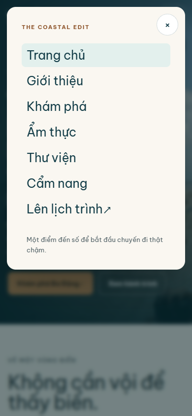
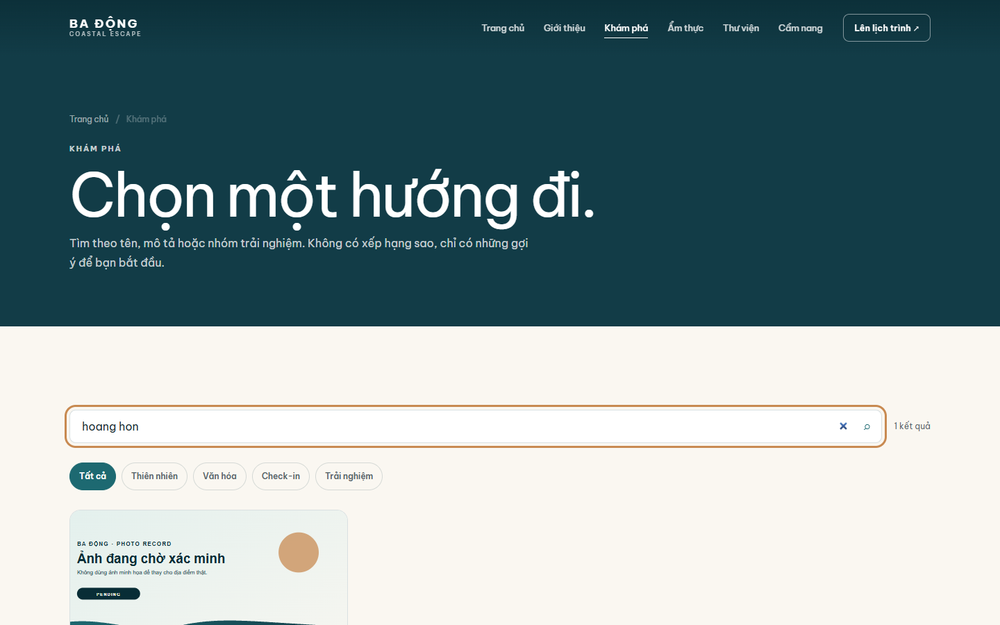
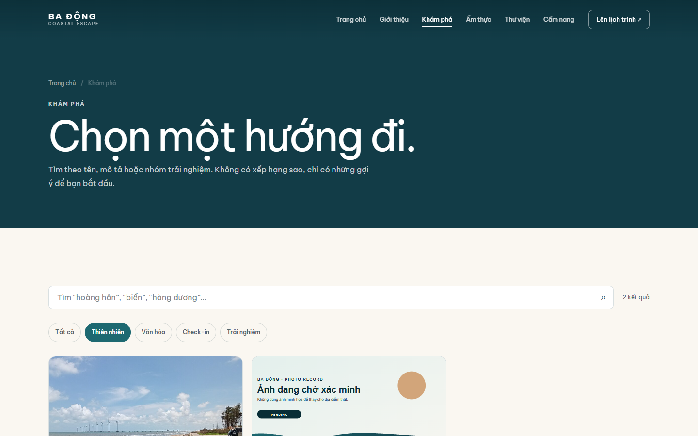
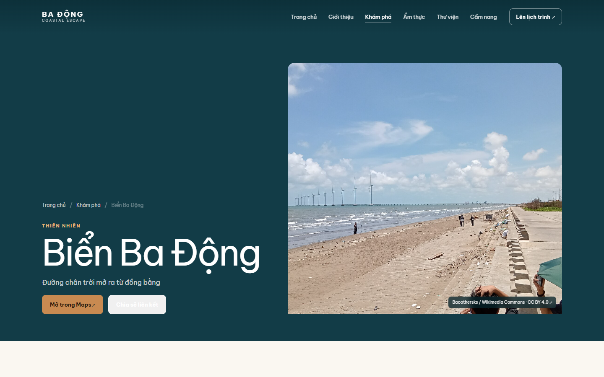
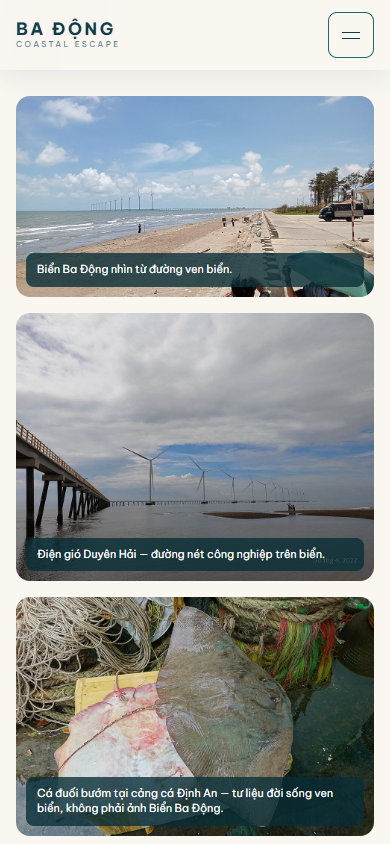
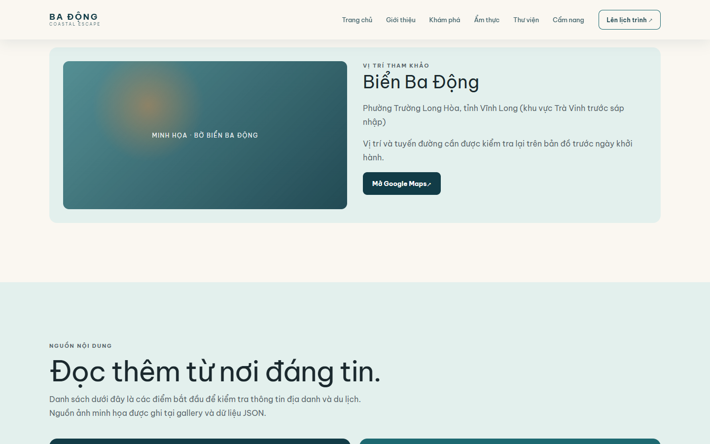
F. Siêu dữ liệu và nguồn ảnh
Tệp image-manifest.json và sổ docs/CONTENT_SOURCES.md là nơi đối chiếu các đường dẫn và giấy phép. Ví dụ ảnh Biển Ba Động của Baoothersks có giấy phép CC BY 4.0 và các bản ảnh kích thước khác nhau [1]. Ghi công trong hình sử dụng nội dung hiện có của giao diện. Khi đưa ảnh giao diện sang tài liệu, cần duy trì chỉ dẫn tới nguồn và không đổi diễn giải vị trí.
| Trạng thái | Diễn giải trong dự án |
|---|---|
| VERIFIED | Có căn cứ cho chủ thể và địa điểm khai báo. |
| VERIFIED_REGION | Ảnh thuộc vùng liên quan. Ghi địa điểm cụ thể. |
| VERIFIED_SUBJECT | Chủ thể phù hợp; vị trí khác hoặc không đủ để gọi là Ba Động. |
| INTERNAL_PLACEHOLDER | Hình giữ chỗ do dự án quản lý. |
| PENDING | Mục cần tìm hoặc xác minh ảnh phù hợp. |
Danh sách nguồn và biến thể giữ riêng với nhiệm vụ biên tập. Một ảnh vùng rộng hơn không dùng để thỏa yêu cầu ảnh chụp cảnh cụ thể nếu nguồn chưa chứng minh. Khi cập nhật hồ sơ, dùng nhãn trạng thái nhất quán giữa trang, siêu dữ liệu và tài liệu.